หน้ามหาวิทยาลัย ช่วงกลางมหาวิทยาลัย ช่วงวิศวกรรมและสนามกีฬา ท้ายมหาวิทยาลัยและหอพัก ชื่อและที่ตั้งรอยืนยัน
รายชั้น 0 แถวมีข้อมูล · 4 แถวเว้นไว้ ชั้น หน่วยงาน / พื้นที่ / เลขห้อง 1 2 3 4
แถวชั้นตั้งต้นจากโมเดลเดิม เพิ่มชั้นที่พบในเอกสาร; ช่องว่างหมายถึงยังไม่มีข้อมูล ไม่ได้แปลว่าเป็นพื้นที่ว่าง และไม่ยืนยันจำนวนชั้นจริง
แหล่งอ้างอิงและข้อสังเกต (0) ชื่อสำนักประสานงานชุดโครงการอุตสาหกรรมฯ มาจากไฟล์เดิม ยังไม่ยืนยันหน่วยงานปัจจุบัน พบชื่อสำนักประสานงานชุดโครงการฯ ในเอกสารวิจัย แต่ยังไม่มีหลักฐานผูกหน่วยงานนั้นกับอาคารที่พิกัดนี้ 02 หน้ามหาวิทยาลัย · เลข 11
บัณฑิตวิทยาลัยวิศวกรรมศาสตร์นานาชาติสิรินธรไทย-เยอรมัน (TGGS) TGGS: กระจกเขียว แผงชื่อกลาง แถบแดงและชั้นบังแดดยื่น · หน้าแหล่งภาพไม่ระบุวันถ่าย · กองคลัง สำนักงานอธิการบดี มจพ. อาคาร TGGS อยู่ด้านซ้ายเมื่อเข้าประตูหลัก มจพ. หน้าแนะนำการเดินทางระบุอาคาร 10 ชั้น คู่มือนักศึกษา TGGS ปี 2025 ระบุชั้น 1 บริการการเงิน ชั้น 2 งานทะเบียน และชั้น 3–10 พื้นที่ TGGS รายละเอียดห้องให้ดูข้อมูลติดต่อของหน่วยงาน
ปรับรูปด้านหลักตามภาพกองคลัง คงผังและ 10 ชั้นเดิม รูปด้านข้าง ความลึก ชั้นบังแดดและหลังคาที่ยืนยันไม่ได้ครบยังประมาณ ป้ายวาดใหม่จากข้อความในภาพ ไม่ใช้ภาพนี้เป็นแบบรังวัด
ตรวจพบข้อมูลทางการบางส่วน
กองบริการการศึกษาอยู่ชั้น 2 TGGS: ศูนย์ข้อมูลหลักสูตรห้อง 304 และงานวิชาการห้อง 303 ชั้น 3 รายชั้น 3 แถวมีข้อมูล · 7 แถวเว้นไว้ ชั้น หน่วยงาน / พื้นที่ / เลขห้อง 1 กองคลัง ↗ หน่วยงาน/บริการ
2 กองบริการการศึกษา ↗ หน่วยงาน/บริการ
3 งานวิชาการ TGGS ห้อง 303 / ข้อมูลหลักสูตร ห้อง 304 ↗ หน่วยงาน/บริการ
ห้อง 303, 304
4 5 6 7 8 9 10
แถวชั้นตั้งต้นจากโมเดลเดิม เพิ่มชั้นที่พบในเอกสาร; ช่องว่างหมายถึงยังไม่มีข้อมูล ไม่ได้แปลว่าเป็นพื้นที่ว่าง และไม่ยืนยันจำนวนชั้นจริง
แหล่งอ้างอิงและข้อสังเกต (4) 03 หน้ามหาวิทยาลัย · เลข 13
อาคาร 13 (ชื่อใช้งานปัจจุบันรอยืนยัน) ยืนยันเลขจากผัง / ชื่อใช้งานรอยืนยัน
พบเลข 13 ในแผนผังมหาวิทยาลัยบริเวณด้านหน้า ใกล้อาคาร TGGS รายชั้น 0 แถวมีข้อมูล · 2 แถวเว้นไว้ ชั้น หน่วยงาน / พื้นที่ / เลขห้อง 1 2
แถวชั้นตั้งต้นจากโมเดลเดิม เพิ่มชั้นที่พบในเอกสาร; ช่องว่างหมายถึงยังไม่มีข้อมูล ไม่ได้แปลว่าเป็นพื้นที่ว่าง และไม่ยืนยันจำนวนชั้นจริง
แหล่งอ้างอิงและข้อสังเกต (1) ยังไม่พบหลักฐานยืนยันชื่อใช้งานปัจจุบัน ภาควิชา และผังแต่ละชั้น ชื่อปฏิบัติการเครื่องจักรกลไฟฟ้าในข้อมูลเดิมยังไม่ควรใช้เป็นชื่อยืนยัน 04 หน้ามหาวิทยาลัย · เลข 47
สำนักวิจัยวิทยาศาสตร์และเทคโนโลยี (STRI) ภาพภายนอกสำนักวิจัยวิทยาศาสตร์และเทคโนโลยี: กรอบส้ม แผงกันแดดเทา กระจกเขียว ป้าย STRI และแนวกระจกข้างอาคาร · หน้าเว็บไม่ระบุวันถ่าย · ตรวจ21ต.ค.2569 · สำนักวิจัยวิทยาศาสตร์และเทคโนโลยี มจพ. · เว็บไซต์ COED สำนักวิจัยวิทยาศาสตร์และเทคโนโลยีสนับสนุนงานวิจัย บริการวิชาการและเครือข่ายศูนย์วิจัยเฉพาะทางของ มจพ. ข่าว STRI ปี2569ระบุสำนักงานคณะกรรมการจริยธรรมการวิจัยในมนุษย์ชั้น8 และห้องประชุม Cloud 9 ชั้น9 ภาพภายนอกจากเว็บไซต์ COED ของสำนักเห็นชื่อหน่วยงานสองภาษาและตัวอักษร STRI ชัดเจน เลข47อ้างอิงการจับคู่หน่วยงานในผังที่ใช้กับแมพ
ภาพยืนยันด้านหน้าของหน่วยงาน STRI ไม่ปรากฏเลข47ในภาพ ทิศทางด้านหน้าบนแมพยังประมาณตามผังเดิม คงข้อมูลอย่างน้อย9ชั้นที่มีอยู่แล้ว แถวแผงบนโมเดลเป็นจังหวะรูปด้านจากภาพ ไม่ใช่การยืนยันจำนวนชั้นหรือห้องเพิ่ม ความสูง มิติ แนวกระจกข้าง ส่วนหลังคาและด้านหลังที่ไม่เห็นยังประมาณ ไม่พบวันถ่ายหรือชื่อผู้ถ่ายในหน้าแหล่งภาพ
ตรวจพบข้อมูลทางการบางส่วน
สำนักวิจัยวิทยาศาสตร์และเทคโนโลยี (ตามแผนที่ที่ได้รับ) ข่าวปี 2569 ระบุสำนักงานคณะกรรมการจริยธรรมการวิจัยในมนุษย์ที่ชั้น 8 และห้องประชุม Cloud 9 ที่ชั้น 9 รายชั้น 2 แถวมีข้อมูล · 7 แถวเว้นไว้ ชั้น หน่วยงาน / พื้นที่ / เลขห้อง 1 2 3 4 5 6 7 8 สำนักงานคณะกรรมการจริยธรรมการวิจัยในมนุษย์ / คลินิกให้คำปรึกษาตามรอบประกาศ ↗ หน่วยงาน/บริการ · 2569
9 ห้องประชุม Cloud 9 ↗ ห้องประชุมตามข่าวกิจกรรม · 2569
แถวชั้นตั้งต้นจากโมเดลเดิม เพิ่มชั้นที่พบในเอกสาร; ช่องว่างหมายถึงยังไม่มีข้อมูล ไม่ได้แปลว่าเป็นพื้นที่ว่าง และไม่ยืนยันจำนวนชั้นจริง
แหล่งอ้างอิงและข้อสังเกต (3) หน้าเว็บมหาวิทยาลัยยืนยันชื่อหน่วยงาน แต่ยังไม่มีหลักฐานที่พอระบุห้องและชั้นครบในเลขอาคารนี้ แมพปัจจุบันแสดงอย่างน้อย9ชั้นตามข่าวชั้น8/9แล้ว รูปด้านv103ใช้ภาพภายนอกSTRIจากCOED จำนวนแถวแผงไม่ใช่ยืนยันชั้นสูงสุด ความสูงและด้านที่ไม่เห็นยังประมาณ 05 หน้ามหาวิทยาลัย · เลข 22
อาคารอเนกประสงค์ (อาคาร 22) · สำนักงานอธิการบดี 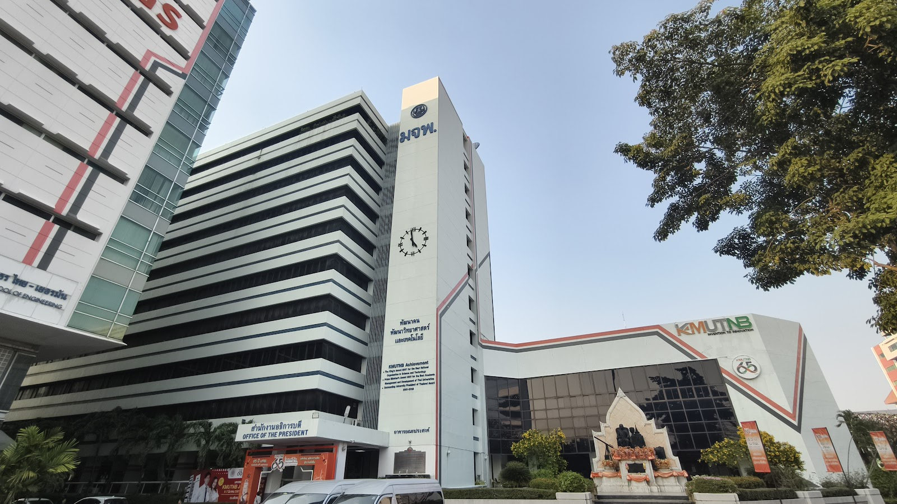
สำนักงานอธิการบดี: แถบขาวดำ หอนาฬิกา และโถงกระจกข้างกัน · ก.พ. 2567 ตามส่วนท้ายภาพ; หัวข้อระบุ มี.ค. 2567 · POMSAN AI Daily / Google Maps 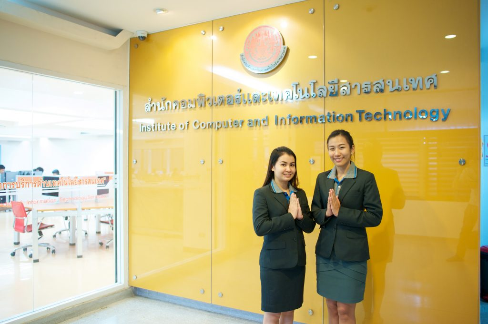
ภาพภายใน: ป้ายสำนักงาน ICIT ไม่ใช่รูปด้านนอกอาคาร · ไฟล์อัปโหลด พ.ค. 2559 · ไม่ระบุวันถ่าย · สำนักคอมพิวเตอร์และเทคโนโลยีสารสนเทศ มจพ. กลุ่มอาคารอเนกประสงค์เป็นที่ตั้งสำนักงานอธิการบดีและหน่วยงานบริการหลายส่วน เว็บไซต์ ICIT ระบุพื้นที่บริการกรุงเทพฯ ที่ชั้น 3, 4 และ 5 และติดต่อ 0-2555-2000 ต่อ 2205 เว็บไซต์มหาวิทยาลัยใช้เลข 25 สำหรับอาคารอเนกประสงค์ ส่วนแมพที่ได้รับใช้เลข 22 จึงแสดงความต่างนี้ไว้ก่อนนำทางห้องรายชั้น
ภาพแสดงกลุ่มอาคารสำนักงานอธิการบดีและโถงข้างกัน แมพใช้เลข 21/22 แต่หน้าเว็บมหาวิทยาลัยใช้ 24/25 จึงคงเลขแมพเดิมและไม่ย้ายผังห้องข้ามเลขโดยอัตโนมัติ มิติ ตำแหน่งองค์ประกอบ หลังคาที่มองไม่เห็นและรูปด้านอื่นยังประมาณ ภาพเป็นหลักฐานสภาพในปี 2567 ไม่ใช่การรับรองบริการปัจจุบัน คงจำนวนชั้นและหอนาฬิกาเดิม ปรับรายละเอียดขีดนาฬิกาและฐานทางเข้า ภาพ ICIT เป็นภาพภายในเท่านั้น
ตรวจพบข้อมูลทางการบางส่วน
กลุ่มอาคารอเนกประสงค์มีสำนักงานบริหารและบริการสารสนเทศ รายชั้น 0 แถวมีข้อมูล · 11 แถวเว้นไว้ ชั้น หน่วยงาน / พื้นที่ / เลขห้อง 1 2 3 4 5 6 7 8 9 10 11
แถวชั้นตั้งต้นจากโมเดลเดิม เพิ่มชั้นที่พบในเอกสาร; ช่องว่างหมายถึงยังไม่มีข้อมูล ไม่ได้แปลว่าเป็นพื้นที่ว่าง และไม่ยืนยันจำนวนชั้นจริง
กลุ่มอาคารอเนกประสงค์ (แหล่งอ้างอิงไม่เทียบเลข 21/22) ข้อมูลส่วนนี้ยังไม่ใช้ระบุตำแหน่งภายในตึกย่อยบนโมเดล
ชั้น 2 · หอประชุมประดู่แดง ↗ หอประชุม · 2567
ชั้น 3 · พื้นที่บริการสำนักคอมพิวเตอร์และเทคโนโลยีสารสนเทศ ↗ หน่วยงาน/บริการ
ชั้น 4 · พื้นที่บริการสำนักคอมพิวเตอร์และเทคโนโลยีสารสนเทศ ↗ หน่วยงาน/บริการ
ชั้น 5 · พื้นที่บริการสำนักคอมพิวเตอร์และเทคโนโลยีสารสนเทศ ↗ หน่วยงาน/บริการ
ชั้น 3 · Learning Space ↗ หน่วยงาน/บริการ
ชั้น 3 · IT Clinic ↗ หน่วยงาน/บริการ
ชั้น 3 · K Room ↗ หน่วยงาน/บริการ
ชั้น 3 · บริการพิมพ์ ↗ หน่วยงาน/บริการ
ชั้น 9 · กองส่งเสริมวิชาการ ห้อง 904–905 ↗ หน่วยงาน/บริการ
ชั้น 10 · กองงานพัสดุ ↗ หน่วยงาน/บริการ
แหล่งอ้างอิงและข้อสังเกต (10) ICIT อยู่ชั้น 3 อาคารอเนกประสงค์ แต่ยังต้องยืนยันการเทียบเลขอาคาร 22 กับเลข 25 บนเว็บมหาวิทยาลัย ข้อมูลเดิมที่ระบุกิจการนักศึกษาชั้น 10 ยังไม่มีหลักฐานยืนยัน; บริการหลายส่วนอยู่ที่อาคาร 77 06 หน้ามหาวิทยาลัย · เลข 21
อาคารอเนกประสงค์ (อาคาร 21) สำนักงานอธิการบดี: แถบขาวดำ หอนาฬิกา และโถงกระจกข้างกัน · ก.พ. 2567 ตามส่วนท้ายภาพ; หัวข้อระบุ มี.ค. 2567 · POMSAN AI Daily / Google Maps โถงในกลุ่มอาคารอเนกประสงค์ด้านหน้ามหาวิทยาลัย ภาพเห็นผนังกระจกมืดและกรอบขาวขนาดใหญ่พร้อมแนวสีแดงเทา หน้าเว็บมหาวิทยาลัยกล่าวถึงหอประชุมประดู่แดงโดยใช้เลข 24 ซึ่งต่างจากเลขที่ได้รับในแมพนี้ รายละเอียดภายในจึงคงข้อจำกัดการเทียบเลขอาคาร
ภาพแสดงกลุ่มอาคารสำนักงานอธิการบดีและโถงข้างกัน แมพใช้เลข 21/22 แต่หน้าเว็บมหาวิทยาลัยใช้ 24/25 จึงคงเลขแมพเดิมและไม่ย้ายผังห้องข้ามเลขโดยอัตโนมัติ มิติ ตำแหน่งองค์ประกอบ หลังคาที่มองไม่เห็นและรูปด้านอื่นยังประมาณ ภาพเป็นหลักฐานสภาพในปี 2567 ไม่ใช่การรับรองบริการปัจจุบัน
ตรวจพบข้อมูลทางการบางส่วน
ใช้ชื่ออาคารอเนกประสงค์ในไฟล์แผนที่ รายชั้น 0 แถวมีข้อมูล · 4 แถวเว้นไว้ ชั้น หน่วยงาน / พื้นที่ / เลขห้อง 1 2 3 4
แถวชั้นตั้งต้นจากโมเดลเดิม เพิ่มชั้นที่พบในเอกสาร; ช่องว่างหมายถึงยังไม่มีข้อมูล ไม่ได้แปลว่าเป็นพื้นที่ว่าง และไม่ยืนยันจำนวนชั้นจริง
กลุ่มอาคารอเนกประสงค์ (แหล่งอ้างอิงไม่เทียบเลข 21/22) ข้อมูลส่วนนี้ยังไม่ใช้ระบุตำแหน่งภายในตึกย่อยบนโมเดล
ชั้น 2 · หอประชุมประดู่แดง ↗ หอประชุม · 2567
ชั้น 3 · พื้นที่บริการสำนักคอมพิวเตอร์และเทคโนโลยีสารสนเทศ ↗ หน่วยงาน/บริการ
ชั้น 4 · พื้นที่บริการสำนักคอมพิวเตอร์และเทคโนโลยีสารสนเทศ ↗ หน่วยงาน/บริการ
ชั้น 5 · พื้นที่บริการสำนักคอมพิวเตอร์และเทคโนโลยีสารสนเทศ ↗ หน่วยงาน/บริการ
ชั้น 3 · Learning Space ↗ หน่วยงาน/บริการ
ชั้น 3 · IT Clinic ↗ หน่วยงาน/บริการ
ชั้น 3 · K Room ↗ หน่วยงาน/บริการ
ชั้น 3 · บริการพิมพ์ ↗ หน่วยงาน/บริการ
ชั้น 9 · กองส่งเสริมวิชาการ ห้อง 904–905 ↗ หน่วยงาน/บริการ
ชั้น 10 · กองงานพัสดุ ↗ หน่วยงาน/บริการ
แหล่งอ้างอิงและข้อสังเกต (9) หน้าเว็บมหาวิทยาลัยใช้เลข 24/25 สำหรับกลุ่มอเนกประสงค์ จึงยังไม่ถ่ายโอนข้อมูลรายชั้นมายังเลข 21 โดยไม่มีผังเทียบ 07 หน้ามหาวิทยาลัย · เลข 42
วิทยาลัยเทคโนโลยีอุตสาหกรรม (อาคาร 42) 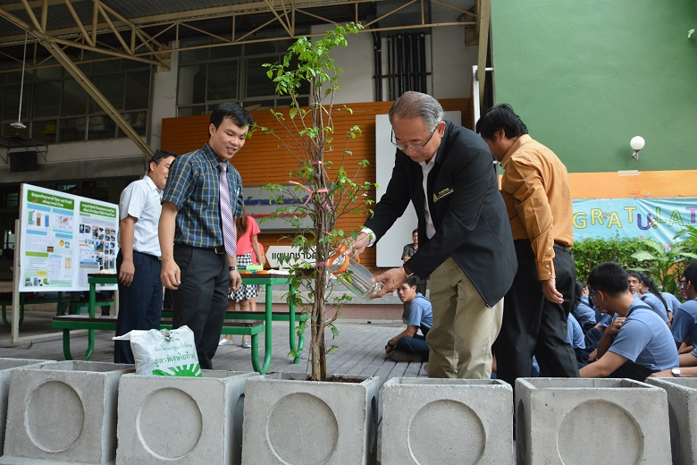
กิจกรรม CIT GREEN DAY ณ ลานหน้าอาคาร42 เห็นโครงหลังคาเหล็ก ผนังส้ม พื้นไม้และกระบะปลูกต้นไม้ · กิจกรรม12ม.ค.2559 · ไฟล์ในโฟลเดอร์เม.ย.2564 ไม่ใช่วันถ่าย · วิทยาลัยเทคโนโลยีอุตสาหกรรม มจพ. 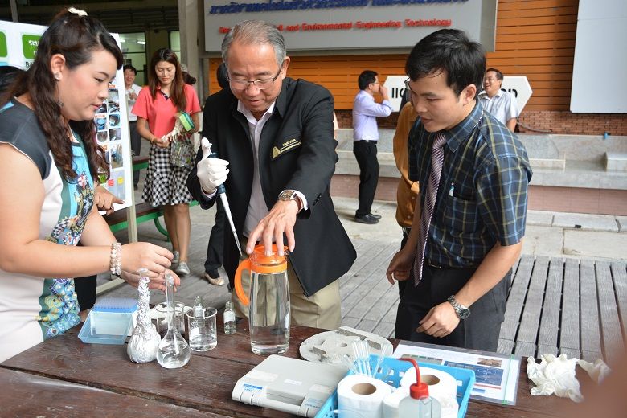
ป้ายภาควิชาเทคโนโลยีวิศวกรรมโยธาและสิ่งแวดล้อมบนแผงขาวและผนังส้ม ในกิจกรรมเดียวกัน · กิจกรรม12ม.ค.2559 · ไม่ยืนยันว่าสภาพปัจจุบันยังเหมือนภาพ · วิทยาลัยเทคโนโลยีอุตสาหกรรม มจพ. ภาควิชาเทคโนโลยีวิศวกรรมโยธาและสิ่งแวดล้อมอยู่ในวิทยาลัยเทคโนโลยีอุตสาหกรรม ข่าวของวิทยาลัยระบุจัดโครงการ CIT GREEN DAY ที่ลานหน้าอาคาร42 เมื่อ12มกราคม2559 เพื่อส่งเสริมการบำบัดน้ำเสียกลับมาใช้รดต้นไม้ ภาพแสดงลานมีหลังคา ป้ายภาควิชา พื้นไม้ และกระบะปลูกต้นไม้ ส่วนข้อมูลติดต่อของภาควิชาให้ตรวจจากเว็บหน่วยงานโดยตรง
ปรับเฉพาะลานมีหลังคาและแผงป้ายที่เห็นในภาพข่าวปี2559 คงตัวอาคารเดิม ขนาด มุมหลังคา จำนวนโครงถักและตำแหน่งบนขอบด้าน1ของผังยังประมาณ ไม่ใช้ภาพลานยืนยันจำนวนชั้น หลังคาหลัก หรือรูปด้านทั้งอาคาร ไม่ยืนยันว่าสภาพปัจจุบันเหมือนภาพเก่า
ตรวจพบข้อมูลทางการบางส่วน
ภาควิชาเทคโนโลยีวิศวกรรมโยธาและสิ่งแวดล้อม วิทยาลัยเทคโนโลยีอุตสาหกรรม รายชั้น 0 แถวมีข้อมูล · 3 แถวเว้นไว้ ชั้น หน่วยงาน / พื้นที่ / เลขห้อง 1 2 3
แถวชั้นตั้งต้นจากโมเดลเดิม เพิ่มชั้นที่พบในเอกสาร; ช่องว่างหมายถึงยังไม่มีข้อมูล ไม่ได้แปลว่าเป็นพื้นที่ว่าง และไม่ยืนยันจำนวนชั้นจริง
แหล่งอ้างอิงและข้อสังเกต (1) 08 หน้ามหาวิทยาลัย · เลข 43
สถาบันนวัตกรรมเทคโนโลยีไทย-ฝรั่งเศส (TFII) อาคาร 43: ช่องหน้าต่างแถบแดง กระจกแนวตั้งและป้าย TFII · หัวข้อ พ.ย. 2567; ส่วนท้าย ต.ค. 2567 ไม่ยืนยันเดือนถ่าย · Karl Tombre / Google Maps รูปด้านสูงอาคาร TFII และโถงทางเข้าในภาพเว็บไซต์หน่วยงาน · ไฟล์อยู่ในโฟลเดอร์อัปโหลด มี.ค. 2569; ไม่ระบุวันถ่าย · TFII มจพ. สถาบันนวัตกรรมเทคโนโลยีไทย-ฝรั่งเศส (TFII) ใช้อาคาร 43 ตามสารบบมหาวิทยาลัย เป็นหน่วยงานด้านนวัตกรรมและบริการเทคโนโลยี รายการสถานที่ระบุเว็บไซต์ tfii.kmutnb.ac.th และโทรศัพท์กลาง 0-2555-2000 ต่อ 2501 ตรวจสอบรายละเอียดบริการและห้องก่อนติดต่อหน่วยงาน
ภาพ Google Maps ตัดส่วนบน จึงเสริมภาพรูปด้านสูงจากเว็บไซต์ TFII คงผังและจำนวนชั้นที่โมเดลเดิมแสดง (9 ชั้น เป็นค่าประมาณ) ไม่ใช้เลข 42 ของอาคารข้างเคียงเป็นเลขอาคารนี้ รูปด้านหลัง หลังคาเต็มหลัง แนวหันและขนาดกันสาดยังประมาณ เดือนของภาพในหัวข้อกับส่วนท้ายไม่ตรงกันจึงแสดงทั้งสองค่า
ตรวจพบข้อมูลทางการบางส่วน
สถาบันนวัตกรรมเทคโนโลยีไทย-ฝรั่งเศส (TFII) บริการฝึกอบรม ทดสอบ และงานเทคโนโลยีอุตสาหกรรม มีฝ่ายเทคโนโลยีไฟฟ้าและพลังงาน ให้บริการฝึกอบรมและทดสอบ รายชั้น 0 แถวมีข้อมูล · 6 แถวเว้นไว้ ชั้น หน่วยงาน / พื้นที่ / เลขห้อง 1 2 3 4 5 6
แถวชั้นตั้งต้นจากโมเดลเดิม เพิ่มชั้นที่พบในเอกสาร; ช่องว่างหมายถึงยังไม่มีข้อมูล ไม่ได้แปลว่าเป็นพื้นที่ว่าง และไม่ยืนยันจำนวนชั้นจริง
แหล่งอ้างอิงและข้อสังเกต (3) 09 หน้ามหาวิทยาลัย · เลข 23
อาคารนวมินทรราชินี (สำนักหอสมุดกลาง) 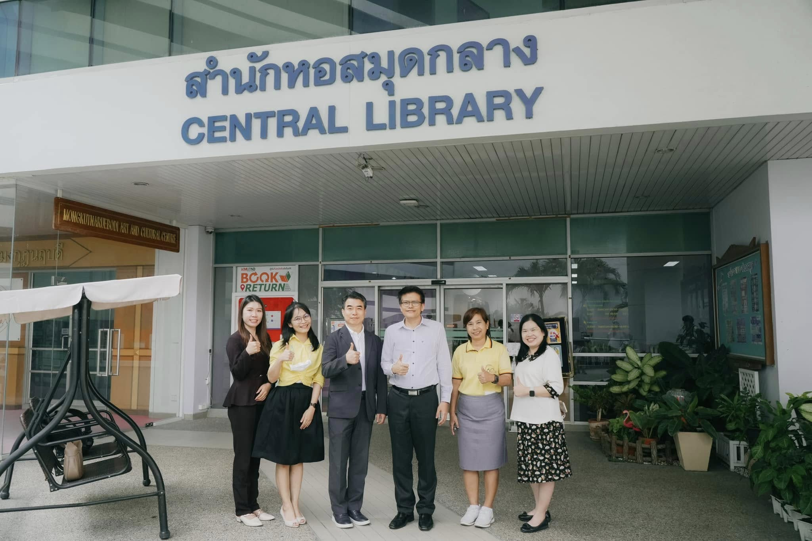
ทางเข้าสำนักหอสมุดกลาง: ป้ายสองภาษา โถงกระจกและตู้คืนหนังสือ · กิจกรรมวันที่ 22 ม.ค. 2567 ตามข่าวต้นทาง · สำนักหอสมุดกลาง มจพ. สำนักหอสมุดกลางให้บริการค้นทรัพยากร ฐานข้อมูลออนไลน์ ยืมต่อและจองหนังสือ รวมถึงจองห้องติวเตอร์ หมายเลขที่เว็บไซต์ระบุคือ 0-2555-2000 ต่อ 2147 และอีเมล info@lib.kmutnb.ac.th ภาพนี้มาจากข่าวต้อนรับคณะเยี่ยมชมวันที่ 22 มกราคม 2567
เพิ่มเฉพาะรายละเอียดทางเข้าที่เห็นในภาพ ใช้รหัสอาคาร 23 ตามแมพเดิม ไม่ใช้เลขอาคารต่างระบบในหน้าเก่ามาเปลี่ยนตำแหน่ง ตัวอาคารและชั้นบนเดิมคงอยู่ ตำแหน่งโถง ความกว้าง ระดับพื้นและส่วนหลังคาที่ไม่เห็นยังประมาณ
ตรวจพบข้อมูลทางการบางส่วน
สำนักหอสมุดกลางให้บริการในอาคารนวมินทรราชินี ชั้น 2–8 บริการทรัพยากรสารสนเทศและพื้นที่ศึกษาค้นคว้า ติดต่อสำนักหอสมุด: 02-555-2000 ต่อ 2147 รายชั้น 8 แถวมีข้อมูล · 4 แถวเว้นไว้ ชั้น หน่วยงาน / พื้นที่ / เลขห้อง 1 2 พื้นที่สำนักหอสมุดกลาง ตามเว็บบริการมหาวิทยาลัยที่ระบุชั้น 2–8 (ไม่ยืนยันขอบเขตทั้งชั้น) ↗ ช่วงชั้นตามเว็บมหาวิทยาลัย ไม่ระบุปีก/ห้อง
3 ภาควิชาเทคโนโลยีสารสนเทศ ↗ หน่วยงาน/บริการ
พื้นที่สำนักหอสมุดกลาง ตามเว็บบริการมหาวิทยาลัยที่ระบุชั้น 2–8 (ไม่ยืนยันขอบเขตทั้งชั้น) ↗ ช่วงชั้นตามเว็บมหาวิทยาลัย ไม่ระบุปีก/ห้อง
4 พื้นที่คณะเทคโนโลยีสารสนเทศและนวัตกรรมดิจิทัล ↗ หน่วยงาน/บริการ
พื้นที่สำนักหอสมุดกลาง ตามเว็บบริการมหาวิทยาลัยที่ระบุชั้น 2–8 (ไม่ยืนยันขอบเขตทั้งชั้น) ↗ ช่วงชั้นตามเว็บมหาวิทยาลัย ไม่ระบุปีก/ห้อง
5 ภาควิชาการบริหารเครือข่ายดิจิทัลและความมั่นคงปลอดภัยสารสนเทศ ↗ หน่วยงาน/บริการ
พื้นที่สำนักหอสมุดกลาง ตามเว็บบริการมหาวิทยาลัยที่ระบุชั้น 2–8 (ไม่ยืนยันขอบเขตทั้งชั้น) ↗ ช่วงชั้นตามเว็บมหาวิทยาลัย ไม่ระบุปีก/ห้อง
6 สำนักงานคณบดี ITD ↗ หน่วยงาน/บริการ
พื้นที่สำนักหอสมุดกลาง ตามเว็บบริการมหาวิทยาลัยที่ระบุชั้น 2–8 (ไม่ยืนยันขอบเขตทั้งชั้น) ↗ ช่วงชั้นตามเว็บมหาวิทยาลัย ไม่ระบุปีก/ห้อง
7 ภาควิชาการจัดการเทคโนโลยีสารสนเทศ ↗ หน่วยงาน/บริการ
พื้นที่สำนักหอสมุดกลาง ตามเว็บบริการมหาวิทยาลัยที่ระบุชั้น 2–8 (ไม่ยืนยันขอบเขตทั้งชั้น) ↗ ช่วงชั้นตามเว็บมหาวิทยาลัย ไม่ระบุปีก/ห้อง
8 ห้องอบรมคอมพิวเตอร์ สำนักหอสมุดกลาง ↗ ห้องที่พบจากกิจกรรม · 2026-07-22
พื้นที่สำนักหอสมุดกลาง ตามเว็บบริการมหาวิทยาลัยที่ระบุชั้น 2–8 (ไม่ยืนยันขอบเขตทั้งชั้น) ↗ ช่วงชั้นตามเว็บมหาวิทยาลัย ไม่ระบุปีก/ห้อง
9 10 11 12 บัณฑิตวิทยาลัย ↗ หน่วยงาน/บริการ
แถวชั้นตั้งต้นจากโมเดลเดิม เพิ่มชั้นที่พบในเอกสาร; ช่องว่างหมายถึงยังไม่มีข้อมูล ไม่ได้แปลว่าเป็นพื้นที่ว่าง และไม่ยืนยันจำนวนชั้นจริง
แหล่งอ้างอิงและข้อสังเกต (4) อาคารนวมินทรราชินีมีหลายหน่วยงาน: เว็บมหาวิทยาลัยระบุหอสมุดชั้น 2–8 และเว็บ ITD ระบุพื้นที่ชั้น 3–7 ยังไม่มีผังแยกปีก/ขอบเขต จึงไม่ตีความว่าแต่ละหน่วยงานครอบครองทั้งชั้น; โมเดลเดิม 8 ชั้นไม่ใช่จำนวนชั้นจริงที่รับรอง 10 หน้ามหาวิทยาลัย · เลข 44
คณะครุศาสตร์อุตสาหกรรม (อาคาร 44) 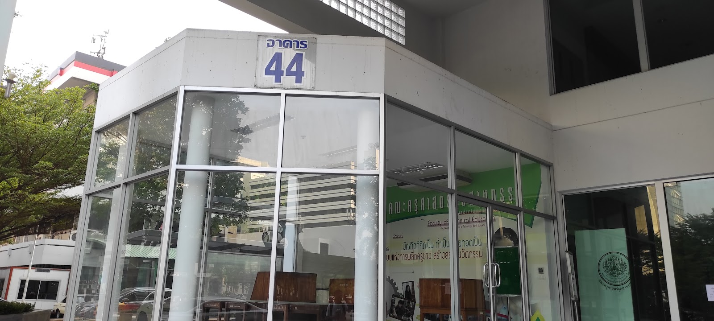
อาคาร 44: โถงกระจกมุมตัด กรอบเงิน ป้ายเลข 44 และเสาขาวภายใน · ธ.ค. 2563 ตามหัวข้อและส่วนท้ายภาพ · KITAENG / Google Maps อาคารปฏิบัติการและประลองรวม (อาคาร 44) อยู่ในความดูแลของคณะครุศาสตร์อุตสาหกรรม มีพื้นที่เรียนและปฏิบัติการ สำนักงานอาคารสถานที่ระบุรับผิดชอบอาคาร 44 และ 52 และมีห้องประชุมใหญ่ชั้น 8 รายละเอียดห้องและผังที่มีหลักฐานแสดงในสารบบเดิมด้านล่าง
ภาพ ธ.ค. 2563 ยืนยันเฉพาะโถงกระจกและป้ายอาคาร 44 จึงเพิ่มเฉพาะทางเข้าที่เห็น ไม่ใช้ภาพนี้ยืนยันรูปด้านเต็มอาคารหรือหลังคา คงอาคารชั้นบนเดิมและข้อมูลชั้นจากผังเดิม มิติ ตำแหน่งโถงและความลึกในโมเดลยังประมาณ
ตรวจพบข้อมูลทางการบางส่วน
อาคารปฏิบัติการและประลองรวม คณะครุศาสตร์อุตสาหกรรม ผังทางการมีชั้น 1–8 ชั้นลอย และพื้นที่ชั้น 9 บางส่วน รายชั้น 10 แถวมีข้อมูล · 0 แถวเว้นไว้ ชั้น หน่วยงาน / พื้นที่ / เลขห้อง 1 ห้อง 44101A, 44101B, 44101C, 44101D, 44102A, 44102B, 44102C, 44103, 44131, 44132, 44133, 44134, 44141, 44142
ผังต้นฉบับชั้นนี้ · 20 เม.ย. 2569 ชั้นลอย ห้อง 44M01, 44M02, 44M03, 44M04, 44M05, 44M06, 44M07, 44M08, 44M09, 44M31, 44M32, 44M33, 44M41, 44M42
ผังต้นฉบับชั้นนี้ · 20 เม.ย. 2569 2 ห้อง 44201A, 44201B, 44201C, 44202, 44231, 44232, 44241
ผังต้นฉบับชั้นนี้ · 20 เม.ย. 2569 3 ห้อง 44301, 44302, 44303, 44304, 44305, 44306, 44307, 44308, 44331, 44332, 44341
ผังต้นฉบับชั้นนี้ · 20 เม.ย. 2569 4 ห้อง 44401, 44402, 44403, 44404, 44405, 44406, 44407, 44408, 44409, 44431, 44432, 44441
ผังต้นฉบับชั้นนี้ · 20 เม.ย. 2569 5 ห้อง 44501, 44502, 44503, 44504, 44505, 44506, 44507, 44508, 44509, 44510, 44511, 44512, 44531, 44532, 44541
ผังต้นฉบับชั้นนี้ · 20 เม.ย. 2569 6 ห้อง 44601, 44602, 44603, 44604, 44605, 44606, 44607, 44608, 44609, 44610, 44611, 44631, 44632, 44641
ผังต้นฉบับชั้นนี้ · 20 เม.ย. 2569 7 ห้อง 44701, 44702, 44703, 44704, 44705, 44706A, 44706B, 44707, 44708, 44709, 44710, 44711, 44731, 44732, 44741
ผังต้นฉบับชั้นนี้ · 20 เม.ย. 2569 8 ห้อง 44801, 44802, 44831, 44832, 44833, 44834, 44841
ผังต้นฉบับชั้นนี้ · 20 เม.ย. 2569 9 ห้อง 44901, 44902, 44931
ผังต้นฉบับชั้นนี้ · 20 เม.ย. 2569
แถวชั้นตั้งต้นจากโมเดลเดิม เพิ่มชั้นที่พบในเอกสาร; ช่องว่างหมายถึงยังไม่มีข้อมูล ไม่ได้แปลว่าเป็นพื้นที่ว่าง และไม่ยืนยันจำนวนชั้นจริง
แหล่งอ้างอิงและข้อสังเกต (2) โมเดลมวลหลัก 8 ชั้น เพิ่มชั้น 9 บางส่วนจากผังปี 2026; แนววางและขนาดส่วนชั้น 9 ยังประมาณ ไม่ได้ยืนยันด้วยภาพภายนอกปี 2024 ขึ้นไป เลขห้องที่อ่านได้จากข้อความในผังวันที่ 20 เม.ย. 2569 อาจไม่ครบทุกป้าย; ดูผังต้นฉบับสำหรับห้องทั้งหมดและไม่ใช้แทนตารางใช้ห้อง 11 หน้ามหาวิทยาลัย · เลข 41
คณะสถาปัตยกรรมและการออกแบบ 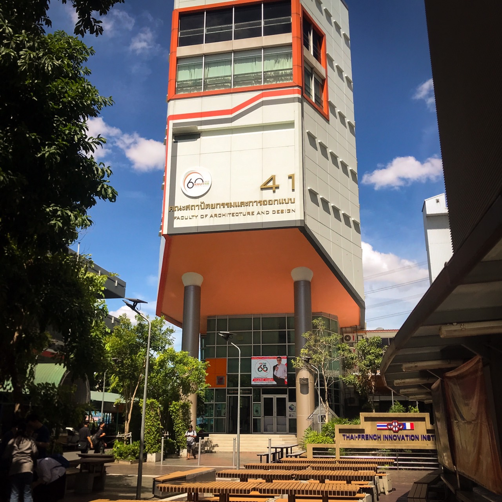
รูปด้านอาคาร 41: โถงลึก เสากลมและส่วนยื่นสีส้ม · ก.ค. 2566 ตามหัวข้อภาพ · PAKIN KORNKRAI / Google Maps อาคาร 41 เป็นที่ตั้งคณะสถาปัตยกรรมและการออกแบบ มจพ. แหล่งข้อมูลคณะระบุที่อยู่ 1518 ถนนประชาราษฎร์ 1 แขวงวงศ์สว่าง เขตบางซื่อ กรุงเทพฯ รายละเอียดห้องให้ตรวจสอบจากสารบบและประกาศของคณะก่อนติดต่อ
ภาพตัดส่วนบนออก ปรับเฉพาะลักษณะรูปด้านที่เห็น คงผังและจำนวนชั้นที่แสดงเดิม (โมเดล 9 ชั้น) แนวหันของรูปด้าน มิติส่วนยื่น หลังคาและรูปด้านที่ไม่เห็นยังประมาณ ไม่ใช้ป้ายสถาบันไทย-ฝรั่งเศสของอาคารข้างเคียงเป็นชื่ออาคารนี้
ตรวจพบข้อมูลทางการบางส่วน
คณะสถาปัตยกรรมและการออกแบบใช้พื้นที่อาคาร 41 มีหน่วยงานด้านเทคโนโลยีศิลปอุตสาหกรรม สถาปัตยกรรม และการออกแบบสำนักงาน/การจัดการธุรกิจ รายชั้น 1 แถวมีข้อมูล · 6 แถวเว้นไว้ ชั้น หน่วยงาน / พื้นที่ / เลขห้อง 1 2 3 4 5 6 7 ห้อง 702 / 703 / 704 ใช้สอบสัมภาษณ์ ↗ สถานที่สอบตามประกาศ · 2025-11-15
ห้อง 702, 703, 704
แถวชั้นตั้งต้นจากโมเดลเดิม เพิ่มชั้นที่พบในเอกสาร; ช่องว่างหมายถึงยังไม่มีข้อมูล ไม่ได้แปลว่าเป็นพื้นที่ว่าง และไม่ยืนยันจำนวนชั้นจริง
แหล่งอ้างอิงและข้อสังเกต (2) ยังไม่พบผังหน่วยงานแยกชั้นที่ยืนยันได้ครบ 12 หน้ามหาวิทยาลัย · เลข 46
คณะศิลปศาสตร์ประยุกต์ และโรงอาหารสวนปาล์ม ป้ายสวนปาล์มและทางเข้า พร้อมป้ายชั้น 2 อาคาร 46 ด้านขวา · ม.ค. 2564 · อ้ายเอิ้น อิหลี / Google Maps ศูนย์อาหารสวนปาล์มอยู่ชั้น 2 อาคาร 46 ตามป้ายในภาพ ส่วนหน้าร้านในเครือ Swhite ระบุตำแหน่งชั้น 1 อาคาร 46A ติด Coffee Milk จึงแยกข้อมูลศูนย์อาหารกับร้านชั้นล่างไว้ ไม่ใช้ชื่อร้านในเครือแทนป้ายที่เห็นจริง
ปรับเฉพาะป้ายและช่วงทางเข้าจากภาพ ภาพนี้ไม่ยืนยันหน้าร้านทุกร้านหรือรูปทรงชั้นบน คงอาคารส่วนที่เหลือตามเดิม
ร้านในเครือ Swhite: ที่ตั้งชั้น 1 อาคาร 46A
ตรวจพบข้อมูลทางการบางส่วน
ชั้น 1 มีศูนย์ผลิตตำราเรียนและงานสวัสดิการ ชั้น 2 โรงอาหารสวนปาล์ม ชั้น 3–4 คณะศิลปศาสตร์ประยุกต์ รายชั้น 4 แถวมีข้อมูล · 0 แถวเว้นไว้ ชั้น หน่วยงาน / พื้นที่ / เลขห้อง 1 ศูนย์ผลิตตำราเรียนและงานสวัสดิการ ↗ หน่วยงาน/บริการ
2 โรงอาหารสวนปาล์ม ↗ หน่วยงาน/บริการ
3 คณะศิลปศาสตร์ประยุกต์ ↗ หน่วยงาน/บริการ
4 คณะศิลปศาสตร์ประยุกต์ ↗ หน่วยงาน/บริการ
แถวชั้นตั้งต้นจากโมเดลเดิม เพิ่มชั้นที่พบในเอกสาร; ช่องว่างหมายถึงยังไม่มีข้อมูล ไม่ได้แปลว่าเป็นพื้นที่ว่าง และไม่ยืนยันจำนวนชั้นจริง
แหล่งอ้างอิงและข้อสังเกต (1) ข้อมูลรายชั้นจากหน้าเว็บไม่ระบุวันปรับปรุง ควรตรวจป้ายหน้างานก่อนติดต่อเฉพาะห้อง กระจกมุมสีเขียว แผงส้มแดง กันสาดโค้ง และป้ายคณะครุศาสตร์อุตสาหกรรม · ภาพข่าวครบรอบคณะ · ไม่ระบุวันถ่าย · มหาวิทยาลัยเทคโนโลยีพระจอมเกล้าพระนครเหนือ อาคารคณะครุศาสตร์อุตสาหกรรม ดูผังแยกชั้นและข้อมูลห้องจากเอกสารอาคาร 52 ในรายละเอียดเดิมด้านล่าง
ตรวจพบข้อมูลทางการบางส่วน
คณะครุศาสตร์อุตสาหกรรม ผังอาคารทางการมีชั้นใช้งาน 1–7 และดาดฟ้า มีช่องว่างกลางอาคาร ชื่อย่อบนผัง: ชั้น 2 ภาคคอม; ชั้น 3 ภาคเครื่องกล; ชั้น 5 ภาคไฟฟ้า; ชั้น 6 ภาคบริหารเทคนิค/ภาคเทคโน (เป็นข้อความบนผัง ต้องตรวจชื่อหน่วยงานเต็มปัจจุบัน) รายชั้น 7 แถวมีข้อมูล · 0 แถวเว้นไว้ ชั้น หน่วยงาน / พื้นที่ / เลขห้อง 1 ห้อง 52101, 52102, 52103, 52104, 52105, 52106, 52107, 52108, 52109A, 52109B, 52110A, 52110B, 52119, 52120, 52121, 52122, 52123, 52124
ผังต้นฉบับชั้นนี้ · 20 เม.ย. 2569 2 ข้อความชื่อย่อบนผัง: ภาคคอม ↗ ชื่อย่อบนผัง ไม่ขยายเป็นชื่อหน่วยงานปัจจุบัน · 2026-04-20
ห้อง 52201, 52202, 52203A, 52203B, 52204, 52205, 52206, 52207A, 52207B, 52208, 52209, 52210A, 52210B, 52219, 52221, 52222
ผังต้นฉบับชั้นนี้ · 20 เม.ย. 2569 3 ข้อความชื่อย่อบนผัง: ภาคเครื่องกล ↗ ชื่อย่อบนผัง ไม่ขยายเป็นชื่อหน่วยงานปัจจุบัน · 2026-04-20
ห้อง 52301, 52302, 52303, 52304, 52305, 52306, 52307, 52308, 52309A, 52309B, 52310A, 52310B, 52319, 52321, 52322
ผังต้นฉบับชั้นนี้ · 20 เม.ย. 2569 4 ห้อง 52401, 52402, 52403A, 52403B, 52404A, 52404B, 52405, 52406, 52407, 52408, 52409A, 52409B, 52410A, 52410B, 52419, 52421, 52422
ผังต้นฉบับชั้นนี้ · 20 เม.ย. 2569 5 ข้อความชื่อย่อบนผัง: ภาคไฟฟ้า ↗ ชื่อย่อบนผัง ไม่ขยายเป็นชื่อหน่วยงานปัจจุบัน · 2026-04-20
ห้อง 52501, 52502, 52503, 52504, 52507, 52508A, 52508B, 52509, 52510A, 52510B, 52519, 52521, 52522
ผังต้นฉบับชั้นนี้ · 20 เม.ย. 2569 6 ข้อความชื่อย่อบนผัง: ภาคบริหารเทคนิค / ภาคเทคโน ↗ ชื่อย่อบนผัง ไม่ขยายเป็นชื่อหน่วยงานปัจจุบัน · 2026-04-20
ห้อง 52601, 52602, 52603, 52604, 52605, 52606, 52607, 52608, 52609A, 52609B, 52610A, 52610B, 52619, 52621, 52622
ผังต้นฉบับชั้นนี้ · 20 เม.ย. 2569 7 ห้อง 52701, 52702, 52703, 52704, 52705, 52706, 52707, 52708, 52709, 52710, 52711, 52712, 52713, 52717, 52718, 52719, 52720
ผังต้นฉบับชั้นนี้ · 20 เม.ย. 2569
แถวชั้นตั้งต้นจากโมเดลเดิม เพิ่มชั้นที่พบในเอกสาร; ช่องว่างหมายถึงยังไม่มีข้อมูล ไม่ได้แปลว่าเป็นพื้นที่ว่าง และไม่ยืนยันจำนวนชั้นจริง
แหล่งอ้างอิงและข้อสังเกต (2) สัดส่วนช่องว่างในโมเดลยังเป็นค่าประมาณ; ตรวจผังห้องล่าสุดก่อนเดินทาง เลขห้องที่อ่านได้จากข้อความในผังวันที่ 20 เม.ย. 2569 อาจไม่ครบทุกป้าย; ดูผังต้นฉบับสำหรับห้องทั้งหมดและไม่ใช้แทนตารางใช้ห้อง 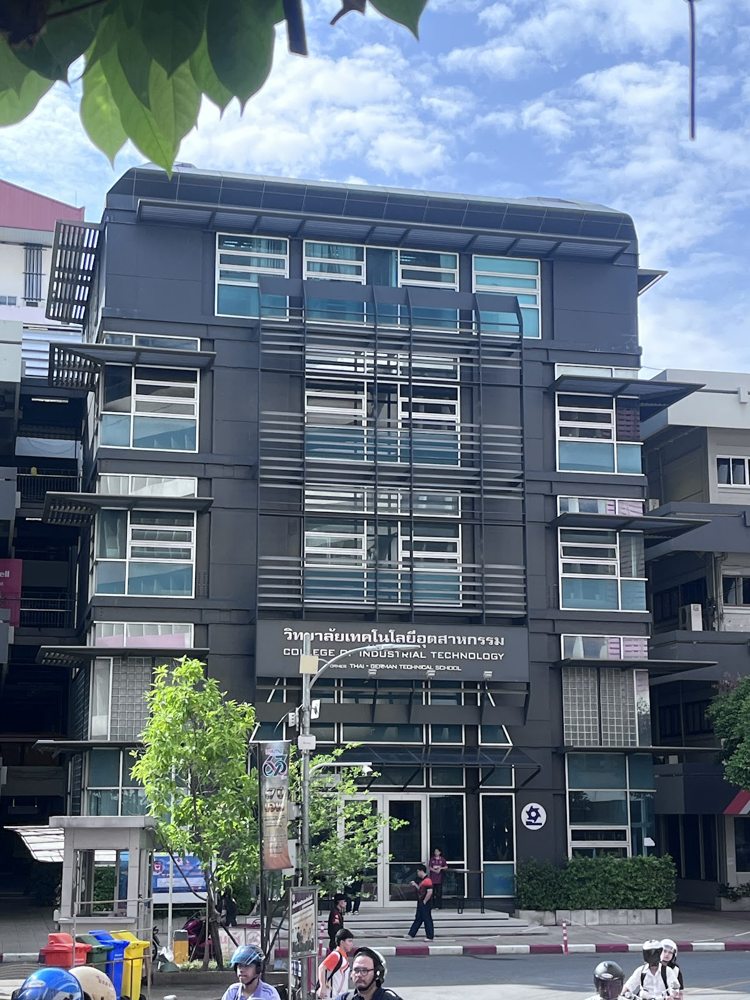
ภาพโถงทางเข้าวิทยาลัยเทคโนโลยีอุตสาหกรรม เห็นช่องกระจกบน4ชุด ผนังเทาเข้ม ครีบและแผงบังแดด กันสาดโลหะคลุมช่วงบน และป้ายชื่อสามบรรทัด · ก.ค.2569 ตามหัวข้อและส่วนท้ายภาพ · Niramon Polraksa / Google Maps ปรับโถงทางเข้าที่จับคู่กับภาพโครงการอาคาร63เดิม โดยใช้ภาพก.ค.2569เพิ่มรายละเอียดสี ช่องกระจกบนและกันสาดคลุมโค้ง คงผัง ปีกอาคารและ5ชั้นเดิม ภาพเห็นกันสาดหน้าโถง ไม่ใช่ผิวหลังคาทั้งหลัง ด้านหลัง จำนวนชั้นปีกอื่น ขนาดและตำแหน่งชิ้นส่วนยังประมาณ ภาพPi-Roomเป็นภายในชั้น3เท่านั้น ไม่ใช้แทนรูปด้านนอก
ภาพอาคาร63จากเว็บผู้ออกแบบ: ครีบโค้ง บังแดดระแนง กระจกเขียวและป้ายวิทยาลัย · หน้าโครงการไม่ระบุวันถ่ายหรือวันเผยแพร่ · Geodesic Design ภาพภายใน: ทางเข้าพื้นที่ Pi-Room ชั้น3 อาคาร63 ไม่ใช่รูปด้านนอก · ข่าวเปิดบริการ มิ.ย.2565 · ไม่ระบุวันถ่าย · วิทยาลัยเทคโนโลยีอุตสาหกรรม มจพ. อาคาร63 วิทยาลัยเทคโนโลยีอุตสาหกรรม มีพื้นที่เรียน หน่วยงานและพื้นที่เรียนรู้ร่วมกัน ข่าววิทยาลัยระบุ Pi-Room ที่ชั้น3 เริ่มเปิด13มิถุนายน2565 และหน้าแนะนำหลักสูตรอิเล็กทรอนิกส์ระบุภาควิชาที่ชั้น4 รายละเอียดห้องและหน่วยงานอื่นให้ตรวจสารบบและประกาศปัจจุบัน
ปรับเฉพาะโถงกระจกทางเข้าที่เว็บผู้ออกแบบระบุอาคาร63 คงปีกอาคาร ผังและ5ชั้นเดิม ภาพไม่ยืนยันหลังคาทั้งหลัง จำนวนชั้นของปีกอื่น มิติและรูปด้านที่ไม่เห็น ตำแหน่งโถงและรายละเอียดครีบยังประมาณ ภาพ Pi-Room เป็นภาพภายในชั้น3 ไม่ใช้ยืนยันผิวอาคารภายนอก
ตรวจพบข้อมูลทางการบางส่วน
อาคารของวิทยาลัยเทคโนโลยีอุตสาหกรรม สาขาวิชาเทคโนโลยีวิศวกรรมแมคคาทรอนิกส์ ชั้น 2 ภาควิชาเทคโนโลยีวิศวกรรมเครื่องต้นกำลัง มีข้อมูลติดต่อที่ชั้น 2 ชั้น 3 ห้องประชุมปาล์มเพชร ตามข่าวกิจกรรมสำนักหอสมุด กิจกรรม CIT Earth Hour 13 ก.พ. 2569 ใช้ห้องปาล์มแก้ว ชั้น 1 อาคาร 63 และบริเวณลาน BYD รายชั้น 4 แถวมีข้อมูล · 1 แถวเว้นไว้ ชั้น หน่วยงาน / พื้นที่ / เลขห้อง 1 สาขาวิชาเทคโนโลยีวิศวกรรมการออกแบบและผลิตเครื่องจักรกล ↗ หน่วยงาน/บริการ
ห้องปาล์มแก้ว ↗ ห้องตามข่าวและภาพกิจกรรม · 2026-02-13
2 เทคโนโลยีวิศวกรรมแมคคาทรอนิกส์ / ภาควิชาเทคโนโลยีวิศวกรรมเครื่องต้นกำลัง ↗ หน่วยงาน/บริการ
3 ห้องประชุมปาล์มเพชร ↗ ห้องประชุม
4 ภาควิชาเทคโนโลยีวิศวกรรมอิเล็กทรอนิกส์ ↗ หน่วยงาน/บริการ
5
แถวชั้นตั้งต้นจากโมเดลเดิม เพิ่มชั้นที่พบในเอกสาร; ช่องว่างหมายถึงยังไม่มีข้อมูล ไม่ได้แปลว่าเป็นพื้นที่ว่าง และไม่ยืนยันจำนวนชั้นจริง
แหล่งอ้างอิงและข้อสังเกต (6) ภาพลาน BYD ปี 2026 เห็นต้นไม้ ร่ม และพื้นที่กิจกรรม แต่ยังไม่ระบุขอบเขตบนแผนที่; ไม่เพิ่มร่ม/บูธกิจกรรมชั่วคราวเป็นวัตถุถาวร 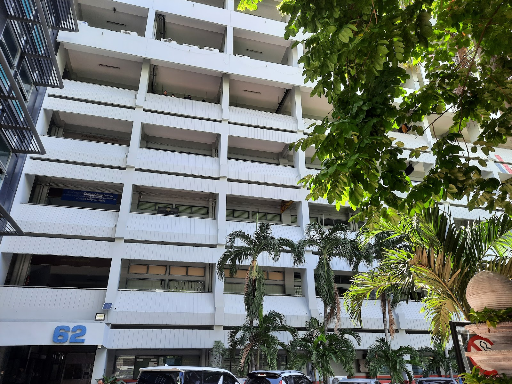
อาคาร 62: กริดเสาขาว ช่องระเบียงเปิดลึก ผนังกันตกเซาะร่อง และเลข 62 สีฟ้าที่ชั้นล่าง · ภาพเดือน ก.ค. 2566 · PT / Google Maps อาคารวิทยาลัยเทคโนโลยีอุตสาหกรรม มีห้องประชุมเพชราวุธชั้น 8 ตามข่าวพิธีไหว้ครูปีการศึกษา 2569 สาขาเทคโนโลยีวิศวกรรมแม่พิมพ์และเครื่องมือระบุสถานที่ติดต่อชั้น 1 และข่าวกิจกรรมปี 2568 ระบุลานด้านล่างข้างลิฟต์ใหม่เป็นพื้นที่กิจกรรม
รูปถ่ายเห็นเพียงบางด้านและไม่ครบหลังคา มิติและรูปด้านที่ไม่เห็นประมาณตามกรอบแผนที่เดิม ข้อมูลกิจกรรมไม่ใช้ยืนยันตำแหน่งสำนักงานถาวร
ข่าวพิธีไหว้ครู 2569 ห้องเพชราวุธ ชั้น 8 ลานกิจกรรมด้านล่างข้างลิฟต์ใหม่ ปี 2568 สาขาเทคโนโลยีวิศวกรรมแม่พิมพ์และเครื่องมือ ตรวจพบข้อมูลทางการบางส่วน
อาคารของวิทยาลัยเทคโนโลยีอุตสาหกรรม สาขาวิชาเขียนแบบเครื่องกล ชั้น 4 สำนักงานภาควิชาเทคโนโลยีวิศวกรรมการเชื่อม ชั้น 4 รายชั้น 1 แถวมีข้อมูล · 7 แถวเว้นไว้ ชั้น หน่วยงาน / พื้นที่ / เลขห้อง 1 2 3 4 สาขาเขียนแบบเครื่องกล / สำนักงานภาควิชาเทคโนโลยีวิศวกรรมการเชื่อม ↗ หน่วยงาน/บริการ
5 6 7 8
แถวชั้นตั้งต้นจากโมเดลเดิม เพิ่มชั้นที่พบในเอกสาร; ช่องว่างหมายถึงยังไม่มีข้อมูล ไม่ได้แปลว่าเป็นพื้นที่ว่าง และไม่ยืนยันจำนวนชั้นจริง
แหล่งอ้างอิงและข้อสังเกต (3) ด้านหน้าสำนักพัฒนาเทคนิคศึกษา เห็นเลข 76 ช่องเปิดชั้นบน แผงช่องลมและซุ้มทางเข้า · ม.ค. 2567 · Nopachote Nirojsuwan / Google Maps สำนักพัฒนาเทคนิคศึกษา (ITED) อยู่ที่อาคาร 76 ทำงานด้านการพัฒนาการเรียนการสอนและเทคนิคศึกษา หน้าติดต่อหน่วยงานระบุที่ตั้ง 1518 ถนนประชาราษฎร์ 1 ภายใน มจพ. และโทรศัพท์ส่วนกลาง 02-555-2000 ต่อ 2311
คงกรอบและ 4 ชั้นเดิม ภาพถ่ายเห็นเพียงช่วงหน้าตึก จำนวนช่วงเสา สัดส่วนช่องลม ด้านหลังและหลังคายังประมาณ
ที่ตั้งและการติดต่อสำนักพัฒนาเทคนิคศึกษา
ตรวจพบข้อมูลทางการบางส่วน
สำนักพัฒนาเทคนิคศึกษา (ITED) มีงานด้านสื่อการเรียนรู้และบริการสนับสนุนการศึกษา เว็บไซต์บริการ KMUTNB MOOC ระบุที่ตั้งอาคาร 76 ประกาศล่าสุดปี 2569 ระบุศูนย์รับรองสมรรถนะบุคคลฯ ย้ายจากชั้น 2 มาชั้น 1 รายชั้น 1 แถวมีข้อมูล · 3 แถวเว้นไว้ ชั้น หน่วยงาน / พื้นที่ / เลขห้อง 1 ศูนย์รับรองสมรรถนะบุคคลตามมาตรฐานอาชีพ (ย้ายจากชั้น 2 ลงชั้น 1) ↗ ประกาศย้ายที่ทำการ · 2569
2 3 4
แถวชั้นตั้งต้นจากโมเดลเดิม เพิ่มชั้นที่พบในเอกสาร; ช่องว่างหมายถึงยังไม่มีข้อมูล ไม่ได้แปลว่าเป็นพื้นที่ว่าง และไม่ยืนยันจำนวนชั้นจริง
แหล่งอ้างอิงและข้อสังเกต (3) ตรวจพบข้อมูลทางการบางส่วน
เป็นอาคารในกลุ่มวิทยาลัยเทคโนโลยีอุตสาหกรรม คู่มือรับสมัครบัณฑิตศึกษาระบุห้อง 103 ชั้น 1 ใช้สอบสัมภาษณ์ด้านงานเชื่อม รายชั้น 1 แถวมีข้อมูล · 2 แถวเว้นไว้ ชั้น หน่วยงาน / พื้นที่ / เลขห้อง 1 ห้อง 103 เคยใช้สอบสัมภาษณ์ด้านงานเชื่อม ↗ สถานที่สอบตามเอกสารเดิม
ห้อง 103
2 3
แถวชั้นตั้งต้นจากโมเดลเดิม เพิ่มชั้นที่พบในเอกสาร; ช่องว่างหมายถึงยังไม่มีข้อมูล ไม่ได้แปลว่าเป็นพื้นที่ว่าง และไม่ยืนยันจำนวนชั้นจริง
แหล่งอ้างอิงและข้อสังเกต (3) ยังไม่พบผังการใช้พื้นที่รายชั้นที่ยืนยันครบ; ไม่กำหนดภาควิชาหรือห้องจากการคาดเดา ตรวจพบข้อมูลทางการบางส่วน
เป็นอาคารในกลุ่มวิทยาลัยเทคโนโลยีอุตสาหกรรม รายชั้น 0 แถวมีข้อมูล · 2 แถวเว้นไว้ ชั้น หน่วยงาน / พื้นที่ / เลขห้อง 1 2
แถวชั้นตั้งต้นจากโมเดลเดิม เพิ่มชั้นที่พบในเอกสาร; ช่องว่างหมายถึงยังไม่มีข้อมูล ไม่ได้แปลว่าเป็นพื้นที่ว่าง และไม่ยืนยันจำนวนชั้นจริง
แหล่งอ้างอิงและข้อสังเกต (2) ยังไม่พบผังการใช้พื้นที่รายชั้นที่ยืนยันครบ; ไม่กำหนดภาควิชาหรือห้องจากการคาดเดา ตรวจพบข้อมูลทางการบางส่วน
เป็นอาคารในกลุ่มวิทยาลัยเทคโนโลยีอุตสาหกรรม รายชั้น 0 แถวมีข้อมูล · 2 แถวเว้นไว้ ชั้น หน่วยงาน / พื้นที่ / เลขห้อง 1 2
แถวชั้นตั้งต้นจากโมเดลเดิม เพิ่มชั้นที่พบในเอกสาร; ช่องว่างหมายถึงยังไม่มีข้อมูล ไม่ได้แปลว่าเป็นพื้นที่ว่าง และไม่ยืนยันจำนวนชั้นจริง
แหล่งอ้างอิงและข้อสังเกต (2) ยังไม่พบผังการใช้พื้นที่รายชั้นที่ยืนยันครบ; ไม่กำหนดภาควิชาหรือห้องจากการคาดเดา ตรวจพบข้อมูลทางการบางส่วน
เป็นอาคารในกลุ่มวิทยาลัยเทคโนโลยีอุตสาหกรรม รายชั้น 0 แถวมีข้อมูล · 2 แถวเว้นไว้ ชั้น หน่วยงาน / พื้นที่ / เลขห้อง 1 2
แถวชั้นตั้งต้นจากโมเดลเดิม เพิ่มชั้นที่พบในเอกสาร; ช่องว่างหมายถึงยังไม่มีข้อมูล ไม่ได้แปลว่าเป็นพื้นที่ว่าง และไม่ยืนยันจำนวนชั้นจริง
แหล่งอ้างอิงและข้อสังเกต (2) ยังไม่พบผังการใช้พื้นที่รายชั้นที่ยืนยันครบ; ไม่กำหนดภาควิชาหรือห้องจากการคาดเดา ภาพเครื่อง Air Conditioning Unit ในชุดภาพห้องปฏิบัติการ REFRIMAC ตามคำบรรยายต้นฉบับ · หน้าPDF97 · เอกสารลงวันที่30มิ.ย.2565 · โฟลเดอร์เผยแพร่มี.ค.2568 · ไม่ระบุวันถ่าย · วิทยาลัยเทคโนโลยีอุตสาหกรรม มจพ. · เอกสารคำรับรองตนเอง เผยแพร่โดยสภาวิศวกร ภาพเครื่อง Absorption ในชุดภาพห้องปฏิบัติการ REFRIMAC ตามคำบรรยายต้นฉบับ · หน้าPDF97 · เอกสารลงวันที่30มิ.ย.2565 · โฟลเดอร์เผยแพร่มี.ค.2568 · ไม่ระบุวันถ่าย · วิทยาลัยเทคโนโลยีอุตสาหกรรม มจพ. · เอกสารคำรับรองตนเอง เผยแพร่โดยสภาวิศวกร ผังห้องปฏิบัติการ REFRIMAC พร้อมรายการเครื่องมือ เป็นผังห้องหนึ่งห้อง ไม่ใช่ผังทั้งชั้นหรือรูปถ่าย · หน้าPDF96 · เอกสารลงวันที่30มิ.ย.2565 · โฟลเดอร์เผยแพร่มี.ค.2568 · ไม่ระบุวันถ่าย · วิทยาลัยเทคโนโลยีอุตสาหกรรม มจพ. · เอกสารคำรับรองตนเอง เผยแพร่โดยสภาวิศวกร ตาราง1-4 ระบุห้องเรียนและห้องปฏิบัติการในอาคาร64 เป็นหน้าเอกสาร ไม่ใช่รูปถ่าย · หน้าPDF161 · เอกสารลงวันที่30มิ.ย.2565 · โฟลเดอร์เผยแพร่มี.ค.2568 · ไม่ระบุวันถ่าย · วิทยาลัยเทคโนโลยีอุตสาหกรรม มจพ. · เอกสารคำรับรองตนเอง เผยแพร่โดยสภาวิศวกร เอกสารคำรับรองตนเองของหลักสูตรเทคโนโลยีวิศวกรรมการทำความเย็นและการปรับอากาศ ลงวันที่30มิถุนายน2565 ระบุการใช้พื้นที่อาคาร64: ห้องปฏิบัติการการปรับอากาศชั้น2 ห้องคอมพิวเตอร์ เทอร์โมไดนามิกส์ และกลศาสตร์ของไหลชั้น3 ห้องการทำความเย็นและไฟฟ้า/ระบบควบคุมชั้น4 และห้องเรียนรวม5ห้องในชั้น2–4 เอกสารยังแสดงเครื่องทดลองและผังห้อง REFRIMAC รายการเหล่านี้เป็นข้อมูลตามเอกสารช่วงนั้น การใช้งานปัจจุบันต้องตรวจหน่วยงานอีกครั้ง
เพิ่มภาพและข้อมูลภายในเท่านั้น คงรูปทรงภายนอกเดิม ไม่ใช้ภาพเครื่องมือหรือผังห้อง REFRIMAC เป็นหลักฐานผังทั้งอาคาร เอกสารไม่ผูกเครื่องทดลองแต่ละภาพกับเลขห้องหรือชั้นเฉพาะ จึงไม่แจกภาพลงชั้นเอง จำนวนชั้นสูงสุดและสถานะปัจจุบันยังไม่ยืนยัน แถวชั้น1ยังไม่มีข้อมูล
ตรวจพบข้อมูลทางการบางส่วน
เป็นอาคารในกลุ่มวิทยาลัยเทคโนโลยีอุตสาหกรรม รายชั้น 3 แถวมีข้อมูล · 1 แถวเว้นไว้ ชั้น หน่วยงาน / พื้นที่ / เลขห้อง 1 2 ห้องปฏิบัติการการปรับอากาศ ↗ เอกสาร2565
ห้องเรียนขนาด50คน (รวม5ห้องในชั้น2–4 ไม่ระบุจำนวนต่อชั้น) ↗ เอกสาร2565
3 ห้องปฏิบัติการคอมพิวเตอร์ ↗ เอกสาร2565
ห้องปฏิบัติการเทอร์โมไดนามิกส์ ↗ เอกสาร2565
ห้องปฏิบัติการกลศาสตร์ของไหล ↗ เอกสาร2565
ห้องเรียนขนาด50คน (รวม5ห้องในชั้น2–4 ไม่ระบุจำนวนต่อชั้น) ↗ เอกสาร2565
4 ห้องปฏิบัติการการทำความเย็น ↗ เอกสาร2565
ห้องปฏิบัติการไฟฟ้าและระบบควบคุม ↗ เอกสาร2565
ห้องเรียนขนาด50คน (รวม5ห้องในชั้น2–4 ไม่ระบุจำนวนต่อชั้น) ↗ เอกสาร2565
แถวชั้นตั้งต้นจากโมเดลเดิม เพิ่มชั้นที่พบในเอกสาร; ช่องว่างหมายถึงยังไม่มีข้อมูล ไม่ได้แปลว่าเป็นพื้นที่ว่าง และไม่ยืนยันจำนวนชั้นจริง
แหล่งอ้างอิงและข้อสังเกต (3) พบข้อมูลการใช้ชั้น2–4บางส่วนตามเอกสารปี2565 ยังไม่มีผังครบทุกชั้นหรือภาพภายนอกที่ยืนยัน คำรับรองตนเอง · ตาราง1-4 หน้าPDF161
ภาพมุมอาคาร 65 เห็นแถบผนังขาวรอบมุม ช่องกระจกแนวยาว เสากลมชั้นล่าง และเลข 65 · ก.ค. 2566 · RAWIWAN POTIKUL / Google Maps อาคาร 65 ของวิทยาลัยเทคโนโลยีอุตสาหกรรม เอกสารสาขาการจัดการกระบวนการผลิตและสารสนเทศระบุสำนักงานชั้น 2 และห้องปฏิบัติการคอมพิวเตอร์ 301–302 ภาพภายนอกใช้เทียบรูปด้าน ไม่ใช้ยืนยันการจัดห้องปัจจุบัน
คงผังและ 11 ชั้นตามข้อมูลเดิม สัดส่วนแถบผนังและจำนวนช่องประมาณจากภาพ หลังคาและด้านที่ไม่เห็นยังประมาณ
แผ่นพับสาขา IPTM: ชั้น 2 และห้องคอมพิวเตอร์ 301–302
ตรวจพบข้อมูลทางการบางส่วน
อาคารปฏิบัติการพื้นฐานรวม วิทยาลัยเทคโนโลยีอุตสาหกรรม สำนักงานภาควิชาการจัดการเทคโนโลยีการผลิตและสารสนเทศ ชั้น 2 มีข้อมูลห้องปฏิบัติการคอมพิวเตอร์ 301–302 ในเอกสารแนะนำภาควิชา รายชั้น 1 แถวมีข้อมูล · 10 แถวเว้นไว้ ชั้น หน่วยงาน / พื้นที่ / เลขห้อง 1 2 สำนักงานภาควิชาการจัดการเทคโนโลยีการผลิตและสารสนเทศ ↗ หน่วยงาน/บริการ
3 4 5 6 7 8 9 10 11
แถวชั้นตั้งต้นจากโมเดลเดิม เพิ่มชั้นที่พบในเอกสาร; ช่องว่างหมายถึงยังไม่มีข้อมูล ไม่ได้แปลว่าเป็นพื้นที่ว่าง และไม่ยืนยันจำนวนชั้นจริง
แหล่งอ้างอิงและข้อสังเกต (2) 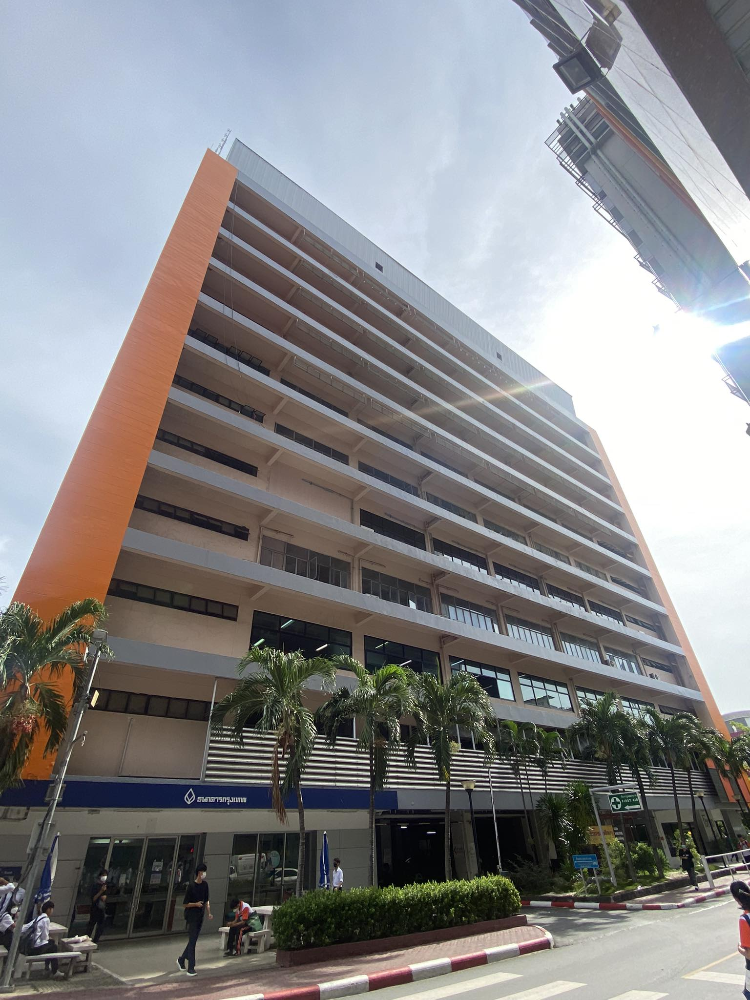
อาคาร 40 ปี: ระเบียงลึก ครีบส้ม ฐานอาคารและแถวปาล์ม · ก.ค. 2566 ตามหัวข้อและส่วนท้ายภาพ · EKKALAK SAMRUENG / Google Maps อาคาร 40 ปี มจพ. หรืออาคาร 77 เป็นอาคารบริการและกิจกรรมนักศึกษา มีโรงอาหารกลางและพื้นที่กีฬา ข้อมูลรายชั้นที่มีหลักฐานอยู่ในสารบบด้านล่าง ภาพเดือนกรกฎาคม 2566 เห็นธนาคารกรุงเทพที่ฐานอาคาร ใช้เป็นจุดสังเกตจากภาพ ไม่รับรองสถานะบริการธนาคารในปัจจุบัน
ปรับรูปด้านหลักจากภาพหนึ่งมุม คงผังและ 11 ชั้นที่แสดงเดิม ภาพไม่ได้ยืนยันการใช้ทุกชั้นหรือผังสนามกีฬา การจัดชั้นภายในยังอ้างสารบบเดิม ไม่สรุปจากช่องระเบียง ขนาดระเบียง ผิวหลังคา รูปด้านที่ไม่เห็นและตำแหน่งต้นไม้ยังประมาณ
ตรวจพบข้อมูลทางการบางส่วน
อาคาร 40 ปี มจพ. / โรงอาหารกลาง ชั้น 1 ศูนย์บริการนักศึกษาและให้คำปรึกษา ชั้น 2 โรงอาหาร; ชั้น 4 งานสวัสดิการนักศึกษาและทุน; ชั้น 5 งานกิจกรรมนักศึกษา ชั้น 7 มีโถงแบดมินตันตามงานวิจัยปี 2568 รายชั้น 5 แถวมีข้อมูล · 6 แถวเว้นไว้ ชั้น หน่วยงาน / พื้นที่ / เลขห้อง 1 ศูนย์บริการนักศึกษาและให้คำปรึกษา ↗ หน่วยงาน/บริการ
2 โรงอาหารกลาง ↗ หน่วยงาน/บริการ
3 4 งานสวัสดิการนักศึกษาและทุน ↗ หน่วยงาน/บริการ
5 งานกิจกรรมนักศึกษา ↗ หน่วยงาน/บริการ
6 7 โถงสนามแบดมินตัน ↗ พื้นที่กีฬาตามงานวิจัย · 2568
8 9 10 11
แถวชั้นตั้งต้นจากโมเดลเดิม เพิ่มชั้นที่พบในเอกสาร; ช่องว่างหมายถึงยังไม่มีข้อมูล ไม่ได้แปลว่าเป็นพื้นที่ว่าง และไม่ยืนยันจำนวนชั้นจริง
แหล่งอ้างอิงและข้อสังเกต (2) ตำแหน่งโถงในโมเดลเป็นค่าประมาณ; การให้บริการให้ตรวจประกาศหน่วยงาน อาคาร 81 · เสาขาว โถงเปิด ปีกยื่นและขอบสีแดงอมม่วง · อัปโหลด พ.ศ. 2559 · ไม่ระบุวันถ่าย · U-Review อาคารคณะวิศวกรรมศาสตร์ มีสำนักงานผู้บริหารชั้น 2 งานคณบดีและบริการนักศึกษาชั้น 3 และภาควิชาวิศวกรรมอุตสาหการชั้น 4 ตามสารบบคณะ
ตรวจพบข้อมูลทางการบางส่วน
ชั้น 2 สำนักงานผู้บริหาร ชั้น 3 สำนักงานคณบดี งานบริการการศึกษา และ CIEP ชั้น 4 ภาควิชาวิศวกรรมอุตสาหการ รายชั้น 3 แถวมีข้อมูล · 5 แถวเว้นไว้ ชั้น หน่วยงาน / พื้นที่ / เลขห้อง 1 2 สำนักงานผู้บริหารคณะวิศวกรรมศาสตร์ ↗ หน่วยงาน/บริการ
3 สำนักงานคณบดี / งานบริการการศึกษา / CIEP ↗ หน่วยงาน/บริการ
4 ภาควิชาวิศวกรรมอุตสาหการ ↗ หน่วยงาน/บริการ
5 6 7 8
แถวชั้นตั้งต้นจากโมเดลเดิม เพิ่มชั้นที่พบในเอกสาร; ช่องว่างหมายถึงยังไม่มีข้อมูล ไม่ได้แปลว่าเป็นพื้นที่ว่าง และไม่ยืนยันจำนวนชั้นจริง
แหล่งอ้างอิงและข้อสังเกต (1) ภาพภายใน: โต๊ะทำงานร่วมกันและโคมไฟ FINN Space ใต้อาคาร79 ไม่ใช่รูปด้านนอก · ไฟล์อัปโหลด ก.พ.2564 · ไม่ระบุวันถ่าย · สำนักคอมพิวเตอร์และเทคโนโลยีสารสนเทศ มจพ. อาคารสโมสรบุคลากร มจพ. หรือเลข79 มีบริการและพื้นที่ส่วนกลางหลายประเภท เว็บไซต์ ICIT ระบุ FINN Space กรุงเทพฯ ใต้อาคาร79 ติดกับ U-Store สำหรับทำงานร่วมกัน ใช้คอมพิวเตอร์ และขอคำแนะนำบริการสารสนเทศ เช่น WiFi และ ICIT Account ข้อมูลห้องพยาบาลและครัวสโมสรจากแหล่งต่างช่วงเวลาอาจใช้ชั้นไม่ตรงกัน จึงควรตรวจหน่วยงานก่อนติดต่อ
เพิ่มข้อมูลและรูปภายในเท่านั้น ยังไม่มีรูปด้านนอกที่ยืนยันอาคาร79ครบ จึงคงโมเดลภายนอกเดิมและไม่ใช้ภาพโต๊ะภายในแต่งหลังคาหรือหน้าร้าน รูปเป็นภาพเก่า ไม่รับรองเวลาทำการหรือสภาพบริการปัจจุบัน
ตรวจพบข้อมูลทางการบางส่วน
อาคารสโมสรบุคลากร ศูนย์บริการสุขภาพ มจพ. อยู่ชั้น 2 ติดต่อศูนย์บริการสุขภาพ: 02-555-2000 ต่อ 1126 รายชั้น 2 แถวมีข้อมูล · 1 แถวเว้นไว้ ชั้น หน่วยงาน / พื้นที่ / เลขห้อง ใต้ดิน FINN Space ตามข่าวปี 2563 ↗ บริการตามเอกสารเก่า · 2563
1 2 ศูนย์บริการสุขภาพ มจพ. ↗ หน่วยงาน/บริการ
แถวชั้นตั้งต้นจากโมเดลเดิม เพิ่มชั้นที่พบในเอกสาร; ช่องว่างหมายถึงยังไม่มีข้อมูล ไม่ได้แปลว่าเป็นพื้นที่ว่าง และไม่ยืนยันจำนวนชั้นจริง
แหล่งอ้างอิงและข้อสังเกต (2) ร้านค้าและเวลาเปิดให้บริการในข้อมูลเดิมยังต้องตรวจสถานะปัจจุบัน ตรวจพบข้อมูลทางการบางส่วน
มีหลักฐานใช้พื้นที่ของภาควิชาวิศวกรรมไฟฟ้าและคอมพิวเตอร์ คู่มือบัณฑิตศึกษาระบุห้อง 85-217 ชั้น 2 สำหรับสอบสัมภาษณ์ รายชั้น 1 แถวมีข้อมูล · 3 แถวเว้นไว้ ชั้น หน่วยงาน / พื้นที่ / เลขห้อง 1 2 ห้อง 85-217 เคยใช้สอบสัมภาษณ์ ↗ สถานที่สอบตามเอกสารเดิม
ห้อง 85-217
3 4
แถวชั้นตั้งต้นจากโมเดลเดิม เพิ่มชั้นที่พบในเอกสาร; ช่องว่างหมายถึงยังไม่มีข้อมูล ไม่ได้แปลว่าเป็นพื้นที่ว่าง และไม่ยืนยันจำนวนชั้นจริง
แหล่งอ้างอิงและข้อสังเกต (1) สถานที่สอบเป็นหลักฐานการใช้ห้อง ไม่ได้ยืนยันว่าสำนักงานภาควิชาย้ายจากอาคาร 84 ตรวจพบข้อมูลทางการบางส่วน
อาคาร 78 โซน B คณะวิทยาศาสตร์ประยุกต์ ชั้น 8 โซน B มีห้องปฏิบัติการเคมีของภาควิชาเคมีอุตสาหกรรม รายชั้น 1 แถวมีข้อมูล · 8 แถวเว้นไว้ ชั้น หน่วยงาน / พื้นที่ / เลขห้อง 1 2 3 4 5 6 7 8 ห้องปฏิบัติการภาควิชาเคมีอุตสาหกรรม ↗ หน่วยงาน/บริการ
9
แถวชั้นตั้งต้นจากโมเดลเดิม เพิ่มชั้นที่พบในเอกสาร; ช่องว่างหมายถึงยังไม่มีข้อมูล ไม่ได้แปลว่าเป็นพื้นที่ว่าง และไม่ยืนยันจำนวนชั้นจริง
อาคาร 78 รวม (ประกาศไม่ระบุโซน A/B) ข้อมูลส่วนนี้ยังไม่ใช้ระบุตำแหน่งภายในตึกย่อยบนโมเดล
ชั้น 2 · ห้อง 216 / 223 — สอบสัมภาษณ์ CS / CSB ↗ สถานที่สอบ 29 พ.ค. 2568 · 2025-05-29
ชั้น 3 · ห้อง 319 — สอบสัมภาษณ์ ฟิสิกส์อุตสาหกรรมและอุปกรณ์การแพทย์ ↗ สถานที่สอบ 29 พ.ค. 2568 · 2025-05-29
ชั้น 3 · ห้อง 320 — สอบสัมภาษณ์ วิศวกรรมชีวการแพทย์ ↗ สถานที่สอบ 29 พ.ค. 2568 · 2025-05-29
ชั้น 3 · ห้อง 308 — สอบสัมภาษณ์ ฟิสิกส์อุตสาหกรรมหลักสูตรสองภาษา ↗ สถานที่สอบ 29 พ.ค. 2568 · 2025-05-29
ชั้น 4 · ห้อง 423 — สอบสัมภาษณ์ วิศวกรรมไมโครอิเล็กทรอนิกส์ ↗ สถานที่สอบ 29 พ.ค. 2568 · 2025-05-29
ชั้น 5 · ห้อง 516 — สอบสัมภาษณ์ วิทยาศาสตร์ข้อมูล / สถิติประยุกต์ ↗ สถานที่สอบ 29 พ.ค. 2568 · 2025-05-29
ชั้น 7 · ห้อง 720 — สอบสัมภาษณ์ วิทยาศาสตร์และเทคโนโลยีทางอาหาร ↗ สถานที่สอบ 29 พ.ค. 2568 · 2025-05-29
ชั้น 7 · ห้อง 717 — สอบสัมภาษณ์ วิทยาศาสตร์และเทคโนโลยีสิ่งแวดล้อม ↗ สถานที่สอบ 29 พ.ค. 2568 · 2025-05-29
ชั้น 7 · ห้อง 719 — สอบสัมภาษณ์ เทคโนโลยีอุตสาหกรรมเกษตรและนวัตกรรม ↗ สถานที่สอบ 29 พ.ค. 2568 · 2025-05-29
ชั้น 12 · ห้อง 1201 — สอบสัมภาษณ์ คณิตศาสตร์ประยุกต์ / คณิตศาสตร์เชิงวิทยาการคอมพิวเตอร์ ↗ สถานที่สอบ 29 พ.ค. 2568 · 2025-05-29
แหล่งอ้างอิงและข้อสังเกต (2) ผังทุกชั้นยังไม่ยืนยัน; ไม่อนุมานโซนจากเลขห้องเพียงอย่างเดียว 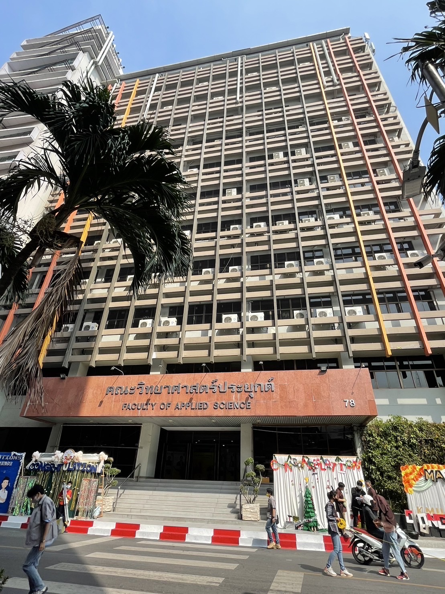
อาคาร 78: กริดบังแดด ครีบส้มเหลืองและป้ายหินแดงหน้าทางเข้า · ธ.ค. 2565 ตามหัวข้อและส่วนท้ายภาพ · Om Singlelady / Google Maps คณะวิทยาศาสตร์ประยุกต์ มจพ. ใช้กลุ่มอาคารวิทยาศาสตร์ซึ่งแมพนี้แยกอาคาร 78 เป็นโซน A และ B ภาพนี้เห็นรูปด้านป้ายเลข 78 กับชื่อคณะชัดเจน จึงใช้ปรับฝั่งทางเข้าโซน A ข้อมูลภาควิชาและห้องที่มีแหล่งยืนยันแสดงในสารบบด้านล่าง ติดต่อข้อมูลปัจจุบันผ่านเว็บไซต์คณะ
ภาพหน้าคณะระบุเลข 78 ไม่แยกชื่อโซน A/B จึงผูกกับทางเข้าฝั่ง A ตามแผนที่เดิมและยังไม่ใช้ยืนยันโซน B คงผังและจำนวนชั้นเดิม จำนวนครีบและเครื่องปรับอากาศเป็นตัวแทนภาพ มิติ ส่วนหลังคาที่ภาพไม่เห็นและรูปด้านข้างยังประมาณ
ตรวจพบข้อมูลทางการบางส่วน
อาคาร 78 โซน A คณะวิทยาศาสตร์ประยุกต์ ชั้น 8 โซน A มีธุรการและห้องพักอาจารย์ภาควิชาเคมีอุตสาหกรรม รายชั้น 1 แถวมีข้อมูล · 11 แถวเว้นไว้ ชั้น หน่วยงาน / พื้นที่ / เลขห้อง 1 2 3 4 5 6 7 8 ธุรการและห้องพักอาจารย์ภาควิชาเคมีอุตสาหกรรม ↗ หน่วยงาน/บริการ
9 10 11 12
แถวชั้นตั้งต้นจากโมเดลเดิม เพิ่มชั้นที่พบในเอกสาร; ช่องว่างหมายถึงยังไม่มีข้อมูล ไม่ได้แปลว่าเป็นพื้นที่ว่าง และไม่ยืนยันจำนวนชั้นจริง
อาคาร 78 รวม (ประกาศไม่ระบุโซน A/B) ข้อมูลส่วนนี้ยังไม่ใช้ระบุตำแหน่งภายในตึกย่อยบนโมเดล
ชั้น 2 · ห้อง 216 / 223 — สอบสัมภาษณ์ CS / CSB ↗ สถานที่สอบ 29 พ.ค. 2568 · 2025-05-29
ชั้น 3 · ห้อง 319 — สอบสัมภาษณ์ ฟิสิกส์อุตสาหกรรมและอุปกรณ์การแพทย์ ↗ สถานที่สอบ 29 พ.ค. 2568 · 2025-05-29
ชั้น 3 · ห้อง 320 — สอบสัมภาษณ์ วิศวกรรมชีวการแพทย์ ↗ สถานที่สอบ 29 พ.ค. 2568 · 2025-05-29
ชั้น 3 · ห้อง 308 — สอบสัมภาษณ์ ฟิสิกส์อุตสาหกรรมหลักสูตรสองภาษา ↗ สถานที่สอบ 29 พ.ค. 2568 · 2025-05-29
ชั้น 4 · ห้อง 423 — สอบสัมภาษณ์ วิศวกรรมไมโครอิเล็กทรอนิกส์ ↗ สถานที่สอบ 29 พ.ค. 2568 · 2025-05-29
ชั้น 5 · ห้อง 516 — สอบสัมภาษณ์ วิทยาศาสตร์ข้อมูล / สถิติประยุกต์ ↗ สถานที่สอบ 29 พ.ค. 2568 · 2025-05-29
ชั้น 7 · ห้อง 720 — สอบสัมภาษณ์ วิทยาศาสตร์และเทคโนโลยีทางอาหาร ↗ สถานที่สอบ 29 พ.ค. 2568 · 2025-05-29
ชั้น 7 · ห้อง 717 — สอบสัมภาษณ์ วิทยาศาสตร์และเทคโนโลยีสิ่งแวดล้อม ↗ สถานที่สอบ 29 พ.ค. 2568 · 2025-05-29
ชั้น 7 · ห้อง 719 — สอบสัมภาษณ์ เทคโนโลยีอุตสาหกรรมเกษตรและนวัตกรรม ↗ สถานที่สอบ 29 พ.ค. 2568 · 2025-05-29
ชั้น 12 · ห้อง 1201 — สอบสัมภาษณ์ คณิตศาสตร์ประยุกต์ / คณิตศาสตร์เชิงวิทยาการคอมพิวเตอร์ ↗ สถานที่สอบ 29 พ.ค. 2568 · 2025-05-29
แหล่งอ้างอิงและข้อสังเกต (2) ข้อมูลของภาควิชาอื่นที่ระบุเพียงอาคาร 78 ไม่ได้แยก A/B จึงยังไม่กำหนดโซน ภาพทางเข้าอาคารที่ป้ายระบุคณะวิทยาศาสตร์ประยุกต์ และอาคารปฏิบัติการเฉพาะทางและห้องเรียนรวม เห็นเสาหินดำ กระจก บันได ราวเหล็ก และแผงบังแดดลึก · ธ.ค.2568 ตามหัวข้อและส่วนท้ายภาพ · Somsuk Sathinanen / Google Maps อาคารปฏิบัติการเฉพาะทางและห้องเรียนรวมเป็นพื้นที่ของคณะวิทยาศาสตร์ประยุกต์ มจพ. ข่าวมหาวิทยาลัยเผยแพร่26มีนาคม2567ระบุใช้ห้อง75-1201จัดพิธีปิดและมอบเกียรติบัตรค่ายโอลิมปิกวิชาการเมื่อ22มีนาคม2567 ชื่ออาคารในข่าวตรงกับป้ายภายนอกในภาพ ส่วนป้ายเหนือประตูในภาพระบุ KMUTNB National Semiconductor Training Center ข้อมูลกิจกรรมและป้ายในภาพไม่ยืนยันผังหน่วยงานปัจจุบันทั้งอาคาร
จับคู่ภาพกับอาคาร75จากชื่อบนป้ายและข่าวทางการที่ระบุห้อง75-1201 ภาพไม่เห็นเลข75โดยตรง แกลเลอรีต้นทางเป็นระดับคณะไม่ใช่รายตึก ปรับเฉพาะทางเข้าและแถวกระจก3ช่วงที่มองเห็น คงส่วนบนและ15ชั้นในข้อมูลเดิม ยังไม่ใช้ภาพนี้ยืนยันจำนวนชั้นสูงสุด หลังคา หรือรูปด้านทั้งหลัง ทิศด้านหน้าในผัง ขนาด จำนวนช่อง แถบถนนและตำแหน่งป้ายย่อยประมาณ
ตรวจพบข้อมูลทางการบางส่วน
อาคารของคณะวิทยาศาสตร์ประยุกต์ตามแผนที่ที่ได้รับ คู่มือรับสมัครบัณฑิตศึกษาระบุการใช้ห้อง 1305 ชั้น 13 รายชั้น 1 แถวมีข้อมูล · 14 แถวเว้นไว้ ชั้น หน่วยงาน / พื้นที่ / เลขห้อง 1 2 3 4 5 6 7 8 9 10 11 12 13 ห้อง 1305 ตามคู่มือรับสมัคร ↗ สถานที่สอบตามเอกสารเดิม
ห้อง 1305
14 15
แถวชั้นตั้งต้นจากโมเดลเดิม เพิ่มชั้นที่พบในเอกสาร; ช่องว่างหมายถึงยังไม่มีข้อมูล ไม่ได้แปลว่าเป็นพื้นที่ว่าง และไม่ยืนยันจำนวนชั้นจริง
แหล่งอ้างอิงและข้อสังเกต (1) การมีห้องชั้น 13 ไม่ยืนยันจำนวนชั้นทั้งหมดหรือผังภาควิชาทุกชั้น 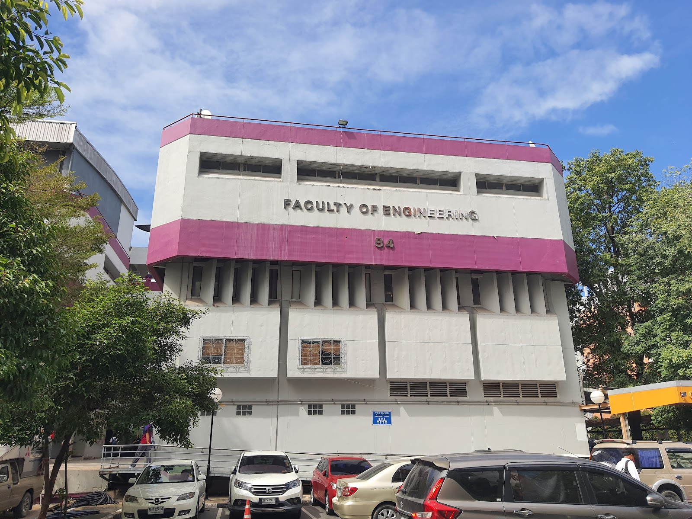
รูปด้านอาคาร 84: แถบชมพูบน–ล่าง ช่องหน้าต่างแนวยาว กล่องชั้นบนยื่น และครีบคอนกรีตถี่ · ธ.ค. 2567 ตามหัวข้อภาพในรายการ · VORAVICH DEEANUNLARP / Google Maps อาคาร 84 เป็นส่วนหนึ่งของคณะวิศวกรรมศาสตร์ สารบบของคณะระบุสำนักงานภาควิชาวิศวกรรมไฟฟ้าและคอมพิวเตอร์ (ECE) ที่ชั้น 2 แกลเลอรีมีทั้งภาพภายนอกและภาพทางเข้าสำนักงานเดิม แยกคำบรรยายแต่ละประเภทไว้
คงผังและ 4 ชั้นเดิม รูปด้านในภาพเห็นเฉพาะด้านหนึ่ง สัดส่วนหน้าตึกในกรอบแผนที่ จำนวนครีบ มิติหลังคา และด้านที่ไม่เห็นยังประมาณ
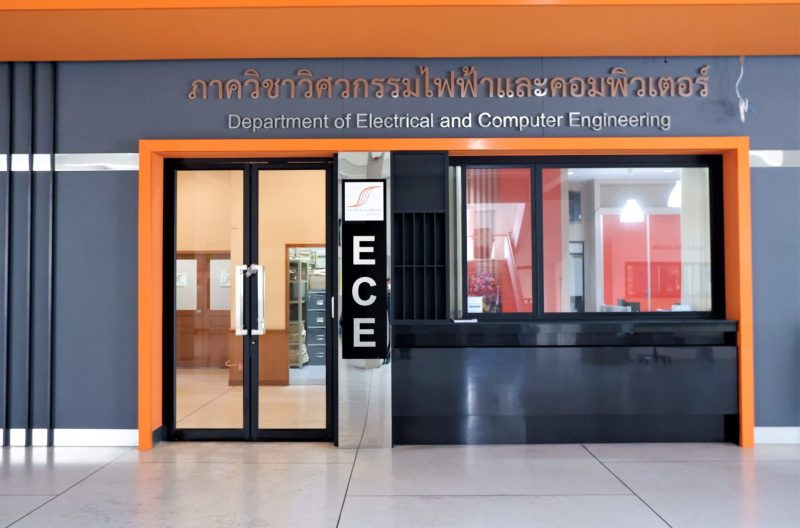
ภาพสำนักงาน/ทางเข้าหน่วยงานภายในอาคาร 84 · ใช้ประกอบรายละเอียดสถานที่ ไม่ใช้แทนภาพเต็มด้านนอก · อัปโหลด เม.ย. 2563 · คณะวิศวกรรมศาสตร์ มจพ. ภาควิชาวิศวกรรมไฟฟ้าและคอมพิวเตอร์ ตั้งอยู่ชั้น 2 ตามสารบบคณะ
ตรวจพบข้อมูลทางการบางส่วน
ชั้น 2 ภาควิชาวิศวกรรมไฟฟ้าและคอมพิวเตอร์ รายชั้น 1 แถวมีข้อมูล · 3 แถวเว้นไว้ ชั้น หน่วยงาน / พื้นที่ / เลขห้อง 1 2 ภาควิชาวิศวกรรมไฟฟ้าและคอมพิวเตอร์ ↗ หน่วยงาน/บริการ
3 4
แถวชั้นตั้งต้นจากโมเดลเดิม เพิ่มชั้นที่พบในเอกสาร; ช่องว่างหมายถึงยังไม่มีข้อมูล ไม่ได้แปลว่าเป็นพื้นที่ว่าง และไม่ยืนยันจำนวนชั้นจริง
แหล่งอ้างอิงและข้อสังเกต (1) 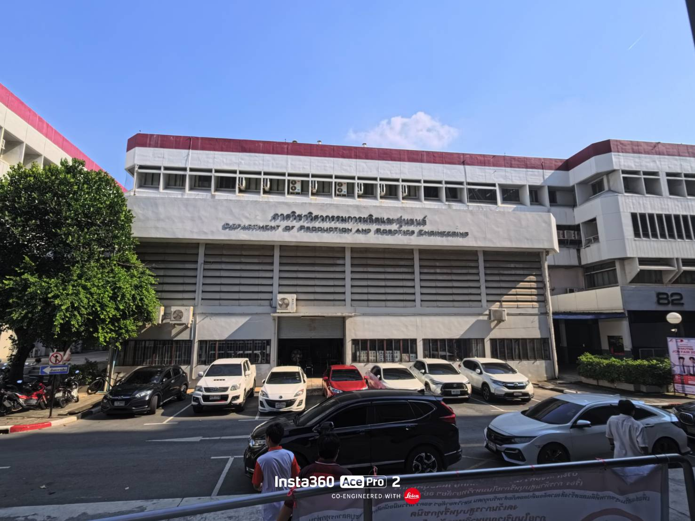
ภายนอกอาคาร 82: บานเกล็ดแนวนอน ป้ายภาควิชาและมุขด้านขวา · ธ.ค. 2568 ตามหัวข้อภาพ · napat Wongsuwan / Google Maps อาคาร 82 คณะวิศวกรรมศาสตร์ สารบบของคณะระบุสำนักงานภาควิชาวิศวกรรมการผลิตและหุ่นยนต์ที่ชั้น 2 และศูนย์คอมพิวเตอร์ทางวิศวกรรม (ECC) ที่ชั้น 3 ภาพภายนอกเห็นชื่อภาควิชาอยู่เหนือแผงบานเกล็ดขนาดใหญ่
ปรับรูปด้านหลักจากภาพหนึ่งมุม คงผังและข้อมูล 5 ชั้นเดิม สัดส่วนบานเกล็ด ความสูง จำนวนช่อง หลังคาและด้านที่ไม่เห็นยังประมาณ ภาพไม่ยืนยันจำนวนชั้นครบทั้งอาคาร
ภาพสำนักงาน/ทางเข้าหน่วยงานภายในอาคาร 82 · ใช้ประกอบรายละเอียดสถานที่ ไม่ใช้แทนภาพเต็มด้านนอก · อัปโหลด เม.ย. 2563 · คณะวิศวกรรมศาสตร์ มจพ. ภาควิชาวิศวกรรมการผลิตอยู่ชั้น 2 และศูนย์คอมพิวเตอร์คณะวิศวกรรมศาสตร์อยู่ชั้น 3 ตามสารบบคณะ
ตรวจพบข้อมูลทางการบางส่วน
ชั้น 2 ภาควิชาวิศวกรรมการผลิต ชั้น 3 ศูนย์คอมพิวเตอร์คณะวิศวกรรมศาสตร์ รายชั้น 2 แถวมีข้อมูล · 3 แถวเว้นไว้ ชั้น หน่วยงาน / พื้นที่ / เลขห้อง 1 2 ภาควิชาวิศวกรรมการผลิต ↗ หน่วยงาน/บริการ
3 ศูนย์คอมพิวเตอร์คณะวิศวกรรมศาสตร์ ↗ หน่วยงาน/บริการ
4 5
แถวชั้นตั้งต้นจากโมเดลเดิม เพิ่มชั้นที่พบในเอกสาร; ช่องว่างหมายถึงยังไม่มีข้อมูล ไม่ได้แปลว่าเป็นพื้นที่ว่าง และไม่ยืนยันจำนวนชั้นจริง
แหล่งอ้างอิงและข้อสังเกต (1) หน้าอาคาร73จากหน้าสถานที่สอบของ DL@KMUTNB เห็นเลขอาคาร ป้ายเดิม กรอบส้ม-เหลืองและแถบกระจกฟ้า · ไฟล์ในโฟลเดอร์พ.ค.2569 · ไม่ระบุวันถ่าย · DL@KMUTNB · สำนักคอมพิวเตอร์และเทคโนโลยีสารสนเทศ มจพ. 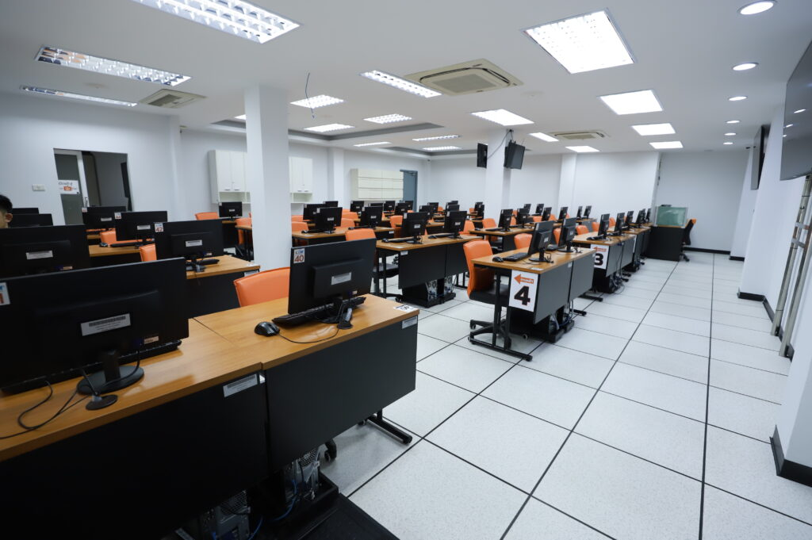
ห้องปฏิบัติการคอมพิวเตอร์ที่หน้า DL@KMUTNB ระบุชั้น1 อาคาร73 · ไฟล์ในโฟลเดอร์พ.ค.2569 · ไม่ระบุวันถ่าย · DL@KMUTNB · สำนักคอมพิวเตอร์และเทคโนโลยีสารสนเทศ มจพ. แผนที่เดินทางไปอาคาร73จากหน้าติดต่อ CEM เป็นแผนผัง ไม่ใช่ภาพถ่าย · ชื่อไฟล์Cem_MAP-2566 · ไม่ระบุวันเผยแพร่ · ศูนย์ทดสอบภาษาอังกฤษและพัฒนาพหุภาษา (CEM) มจพ. ศูนย์ทดสอบภาษาอังกฤษและพัฒนาพหุภาษา (CEM) สำนักงานอธิการบดี ตั้งอยู่ที่อาคาร73 มจพ. กรุงเทพฯ หน้าติดต่อของศูนย์ใช้ชื่อ Center for English Proficiency Assessment and Multilingual Growth และอีเมล cem@op.kmutnb.ac.th หน้า DL@KMUTNB ระบุห้องปฏิบัติการคอมพิวเตอร์สำหรับการสอบสมรรถนะดิจิทัลที่ชั้น1 อาคาร73 กรุณาตรวจประกาศรอบสอบกับหน่วยงานโดยตรง ป้ายที่เห็นในภาพใช้ชื่อเดิมด้านภาษาอังกฤษและสื่อดิจิทัล จึงแยกคำบนป้ายในภาพออกจากชื่อหน่วยงานปัจจุบัน
ปรับรูปด้านหลักจากภาพที่เห็นเลข73ชัดเจน คงขอบเขตผังและข้อมูลชั้นเดิมไว้ ความสูงอาคาร ความลึก ระยะบันได จำนวนแนวแผงและองศาหลังคาประมาณจากภาพ ด้านข้างและด้านหลังยังไม่มีหลักฐานครบ ภาพห้องใช้เพิ่มข้อมูลภายในเท่านั้น แผนที่ทางการไม่ใช้เป็นแบบสำรวจหรือรับรองเส้นทางและเวลาบริการปัจจุบัน
ตรวจพบข้อมูลทางการบางส่วน
ศูนย์ทดสอบภาษาอังกฤษและพัฒนาพหุภาษา (CEM) สังกัดสำนักงานอธิการบดี ห้องปฏิบัติการสอบภาษาอังกฤษ วิทยาเขตกรุงเทพฯ อยู่ชั้น 1 ติดต่อ CEM: 02-555-2272, 2275, 2276, 2277 รายชั้น 1 แถวมีข้อมูล · 2 แถวเว้นไว้ ชั้น หน่วยงาน / พื้นที่ / เลขห้อง 1 ห้องปฏิบัติการสอบภาษาอังกฤษ CEM ↗ หน่วยงาน/บริการ
2 3
แถวชั้นตั้งต้นจากโมเดลเดิม เพิ่มชั้นที่พบในเอกสาร; ช่องว่างหมายถึงยังไม่มีข้อมูล ไม่ได้แปลว่าเป็นพื้นที่ว่าง และไม่ยืนยันจำนวนชั้นจริง
แหล่งอ้างอิงและข้อสังเกต (2) 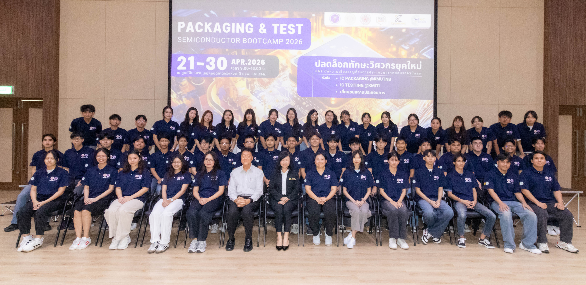
ภาพพิธีเปิด Packaging & Testing Semiconductor Bootcamp 2026 ซึ่งข่าวระบุจัดที่ห้อง Sci-SPHERE ชั้น6 อาคาร72 · พิธีเปิด21เม.ย.2569 · ข่าวเผยแพร่22มิ.ย.2569 · ศูนย์เครื่องมือวิทยาศาสตร์และถ่ายทอดเทคโนโลยี (SITT) คณะวิทยาศาสตร์ประยุกต์ มจพ. อาคาร72มีพื้นที่ของคณะวิทยาศาสตร์ประยุกต์ ประวัติภาควิชาเทคโนโลยีชีวภาพระบุใช้พื้นที่ชั้น5และ7 ส่วนห้องประชุม Sci-SPHERE อยู่ชั้น6 ข่าว SITT ระบุใช้จัดพิธีเปิดค่าย Packaging & Testing Semiconductor Bootcamp 2026 เมื่อ21เมษายน2569 ภาพนี้เป็นภาพห้องภายในจากข่าวดังกล่าว รายละเอียดการติดต่อและการใช้ห้องปัจจุบันให้ตรวจหน่วยงานโดยตรง
เพิ่มเฉพาะภาพภายในและหลักฐานห้อง Sci-SPHERE ชั้น6 คงรูปทรงภายนอกเดิม ภาพนี้ไม่ยืนยันหลังคา หน้าต่าง ทางเข้า จำนวนชั้น หรือการจับคู่รูปอาคารทั้งหลังในโมเดล ข้อมูลชื่อยิมเนเซียมและเลข80/72จากแหล่งเก่ายังต้องเทียบผัง ภาพการเยี่ยมชมบริษัทในแกลเลอรีข่าวเดียวกันไม่ใช้เป็นภาพอาคาร72
ตรวจพบข้อมูลทางการบางส่วน
ภาควิชาเทคโนโลยีชีวภาพ คณะวิทยาศาสตร์ประยุกต์ ใช้พื้นที่ชั้น 5 และ 7 ประกาศรับสมัครปี 2568 ระบุห้องประชุมภาควิชาที่ชั้น 5 อาคาร 72 ข่าวกิจกรรม 16 มิ.ย. 2569 และ Science Exhibition Day 27 ก.พ. 2569 ยืนยันห้อง Sci-SPHERE ชั้น 6 อาคาร 72 รายชั้น 4 แถวมีข้อมูล · 3 แถวเว้นไว้ ชั้น หน่วยงาน / พื้นที่ / เลขห้อง 1 2 3 4 ห้อง 404 — สอบสัมภาษณ์เคมีอุตสาหกรรม ↗ สถานที่สอบ 29 พ.ค. 2568 · 2025-05-29
ห้อง 404
5 ภาควิชาเทคโนโลยีชีวภาพ / ห้องประชุมภาควิชา ↗ หน่วยงาน/บริการ · 2568
6 ห้องประชุม Sci-SPHERE ↗ ห้องประชุมตามข่าวและภาพกิจกรรม · 2026-06-16
7 พื้นที่ภาควิชาเทคโนโลยีชีวภาพ ↗ ประวัติการใช้พื้นที่
แถวชั้นตั้งต้นจากโมเดลเดิม เพิ่มชั้นที่พบในเอกสาร; ช่องว่างหมายถึงยังไม่มีข้อมูล ไม่ได้แปลว่าเป็นพื้นที่ว่าง และไม่ยืนยันจำนวนชั้นจริง
แหล่งอ้างอิงและข้อสังเกต (5) ชื่อยิมเนเซียมและ 3 ชั้นในโมเดลเดิมไม่สอดคล้องกับข้อมูลชั้น 5/7; ต้องเทียบผังอาคารก่อนแก้รูปทรง SITT · ห้องSci-SPHERE ชั้น6
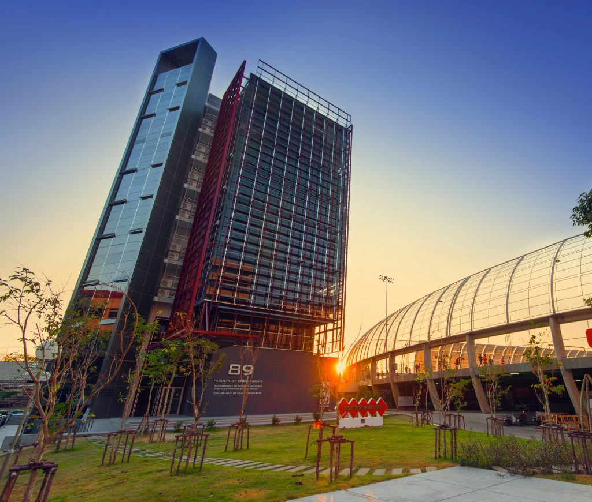
ภายนอกอาคาร 89: หอแนวตั้งและแผงบังแดดโครงแดง · ส.ค. 2567 ตามหัวข้อภาพ · Trinnamet Sungkapat / Google Maps อาคาร 89 คณะวิศวกรรมศาสตร์ สารบบคณะระบุสำนักงานภาควิชาวิศวกรรมโยธาที่ชั้น 2 และภาควิชาวิศวกรรมเครื่องมือวัดและอิเล็กทรอนิกส์ที่ชั้น 8 ป้ายในภาพด้านหน้าแสดงเลข 89 และชื่อคณะ โดยมีทางเดินเชื่อมอยู่ข้างอาคาร
ปรับรูปด้านแคบหลักจากภาพภายนอกหนึ่งมุม คงผังและข้อมูล 11 ชั้นเดิม จำนวนช่อง ความสูง ระยะยื่นและรูปด้านที่ไม่เห็นยังประมาณ ทางเดินข้างอาคารในภาพใช้เป็นบริบท ไม่ได้อ้างว่าปรับโครงทางเดินทั้งหมดแล้ว
ตรวจพบข้อมูลทางการบางส่วน
ชั้น 2 ภาควิชาวิศวกรรมโยธา ชั้น 8 ภาควิชาวิศวกรรมเครื่องมือวัดและพลังงานไฟฟ้า รายชั้น 2 แถวมีข้อมูล · 9 แถวเว้นไว้ ชั้น หน่วยงาน / พื้นที่ / เลขห้อง 1 2 ภาควิชาวิศวกรรมโยธา ↗ หน่วยงาน/บริการ
3 4 5 6 7 8 ภาควิชาวิศวกรรมเครื่องมือวัดและพลังงานไฟฟ้า ↗ หน่วยงาน/บริการ
9 10 11
แถวชั้นตั้งต้นจากโมเดลเดิม เพิ่มชั้นที่พบในเอกสาร; ช่องว่างหมายถึงยังไม่มีข้อมูล ไม่ได้แปลว่าเป็นพื้นที่ว่าง และไม่ยืนยันจำนวนชั้นจริง
แหล่งอ้างอิงและข้อสังเกต (1) 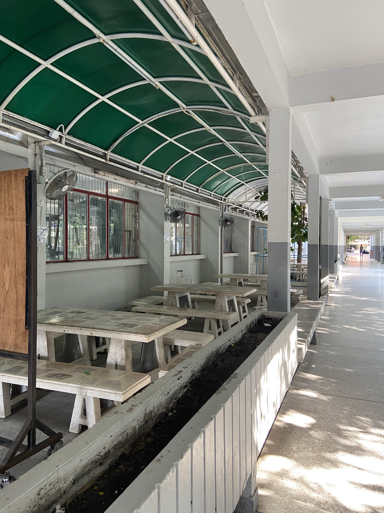
กันสาดโค้งสีเขียวและพื้นที่นั่งชั้นล่างอาคาร 83 · ธ.ค. 2565 ตามหัวข้อภาพ · pongsakarn sumonsart / Google Maps อาคาร 83 เป็นที่ตั้งสำนักงานภาควิชาวิศวกรรมเครื่องกลและการบิน-อวกาศ ชั้น 3 ตามสารบบคณะ ภาพนี้แสดงพื้นที่นั่งและทางเดินชั้นล่าง มีโต๊ะคอนกรีตหน้าห้องและโครงหลังคาโค้ง เว็บไซต์ภาควิชาระบุโทรศัพท์ 02-555-2000 ต่อ 8304, 8307, 8308 และ 8315
เพิ่มเฉพาะรายละเอียดพื้นที่นั่งและกันสาดชั้นล่าง ภาพไม่เห็นอาคารทั้งหลัง ตำแหน่งช่วงกันสาด ความยาวและมิติยังประมาณ คงโมเดลชั้นบนเดิมซึ่งยังไม่ยืนยันจากภาพนี้ มุมเทียบแสดงเฉพาะส่วนที่เพิ่ม
ภาพสำนักงาน/ทางเข้าหน่วยงานภายในอาคาร 83 · ใช้ประกอบรายละเอียดสถานที่ ไม่ใช้แทนภาพเต็มด้านนอก · อัปโหลด เม.ย. 2563 · คณะวิศวกรรมศาสตร์ มจพ. ภาควิชาวิศวกรรมเครื่องกลและการบิน-อวกาศ ตั้งอยู่ชั้น 3 ตามสารบบคณะ
ตรวจพบข้อมูลทางการบางส่วน
ชั้น 3 ภาควิชาวิศวกรรมเครื่องกลและการบิน-อวกาศ รายชั้น 1 แถวมีข้อมูล · 4 แถวเว้นไว้ ชั้น หน่วยงาน / พื้นที่ / เลขห้อง 1 2 3 ภาควิชาวิศวกรรมเครื่องกลและการบิน-อวกาศ ↗ หน่วยงาน/บริการ
4 5
แถวชั้นตั้งต้นจากโมเดลเดิม เพิ่มชั้นที่พบในเอกสาร; ช่องว่างหมายถึงยังไม่มีข้อมูล ไม่ได้แปลว่าเป็นพื้นที่ว่าง และไม่ยืนยันจำนวนชั้นจริง
แหล่งอ้างอิงและข้อสังเกต (1) ข้อมูลเก่า / ต้องยืนยันหน้างาน
รายชั้น 0 แถวมีข้อมูล · 4 แถวเว้นไว้ ชั้น หน่วยงาน / พื้นที่ / เลขห้อง 1 2 3 4
แถวชั้นตั้งต้นจากโมเดลเดิม เพิ่มชั้นที่พบในเอกสาร; ช่องว่างหมายถึงยังไม่มีข้อมูล ไม่ได้แปลว่าเป็นพื้นที่ว่าง และไม่ยืนยันจำนวนชั้นจริง
แหล่งอ้างอิงและข้อสังเกต (2) ไฟล์เดิมระบุภาควิชาเคมีอุตสาหกรรม แต่ที่ทำการภาควิชาปัจจุบันอยู่ชั้น 8 อาคาร 78 ยังไม่ยืนยันจำนวนชั้น ชื่ออาคารปัจจุบัน และขอบเขตการใช้พื้นที่ 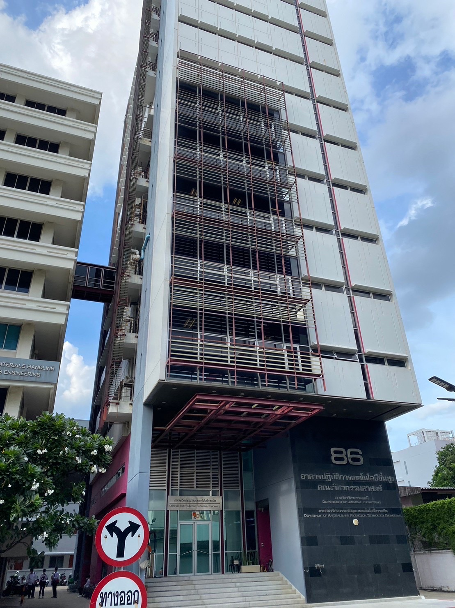
ภายนอกอาคาร 86: แผงบังแดด โครงแดงและฐานอาคารสีเข้ม · ก.ค. 2566 ตามหัวข้อภาพ · Panitta Saengngam / Google Maps อาคาร 86 เป็นอาคารปฏิบัติการเทคโนโลยีขั้นสูงของคณะวิศวกรรมศาสตร์ ป้ายด้านหน้าระบุภาควิชาวิศวกรรมเคมี และภาควิชาวิศวกรรมวัสดุและเทคโนโลยีการผลิต สารบบคณะระบุสำนักงาน MPTE ชั้น 1 และ CHE ชั้น 13 จึงควรดูเลขห้องหรือประกาศของภาควิชาก่อนติดต่อ
ภาพเห็นส่วนล่างและกลางของรูปด้านหนึ่ง ยอดอาคารถูกตัดออก คงกรอบและข้อมูล 12 ชั้นเดิมไว้เป็นการแสดงผลประมาณ ขณะที่สารบบสำนักงานระบุชั้น 13 จึงยังไม่ถือว่าจำนวนชั้นในโมเดลยืนยันครบ มิติแผงบังแดด ด้านหลังและหลังคายังประมาณ
ภาพสำนักงาน/ทางเข้าหน่วยงานภายในอาคาร 86 · ใช้ประกอบรายละเอียดสถานที่ ไม่ใช้แทนภาพเต็มด้านนอก · อัปโหลด เม.ย. 2563 · คณะวิศวกรรมศาสตร์ มจพ. ภาควิชาวิศวกรรมวัสดุและเทคโนโลยีการผลิตอยู่ชั้น 1 และภาควิชาวิศวกรรมเคมีอยู่ชั้น 13 ตามสารบบคณะ
ตรวจพบข้อมูลทางการบางส่วน
ชั้น 1 ภาควิชาวิศวกรรมวัสดุและเทคโนโลยีการผลิต สารบบคณะระบุภาควิชาวิศวกรรมเคมี ชั้น 13 รายชั้น 2 แถวมีข้อมูล · 11 แถวเว้นไว้ ชั้น หน่วยงาน / พื้นที่ / เลขห้อง 1 ภาควิชาวิศวกรรมวัสดุและเทคโนโลยีการผลิต ↗ หน่วยงาน/บริการ
2 3 4 5 6 7 8 9 10 11 12 13 ภาควิชาวิศวกรรมเคมี ตามสารบบคณะ (มีเอกสารอื่นระบุชั้น 15 ต้องตรวจอีกครั้ง) ↗ หน่วยงาน/บริการ
แถวชั้นตั้งต้นจากโมเดลเดิม เพิ่มชั้นที่พบในเอกสาร; ช่องว่างหมายถึงยังไม่มีข้อมูล ไม่ได้แปลว่าเป็นพื้นที่ว่าง และไม่ยืนยันจำนวนชั้นจริง
แหล่งอ้างอิงและข้อสังเกต (2) เอกสารรับสมัครบางฉบับระบุวิศวกรรมเคมีที่ชั้น 15 ขัดกับสารบบ; ควรตรวจประกาศภาควิชาก่อนติดต่อ จำนวนชั้นในโมเดลไม่ใช่จำนวนชั้นจริงที่ยืนยันครบ อาคาร 88 เห็นขอบระเบียงยื่น ช่องกระจกลึก เสาครีม และป้ายภาควิชาสีเทา · ก.ค. 2569 · Jirapat Sriwongrak / Google Maps อาคาร 88 ใช้โดยภาควิชาวิศวกรรมขนถ่ายวัสดุและโลจิสติกส์ (MHLE) คณะวิศวกรรมศาสตร์ ตามสารบบของคณะ ป้ายในภาพแสดงชื่อภาควิชาภาษาอังกฤษ ส่วนข้อมูลสอบสัมภาษณ์ปี 2568 ระบุห้อง 601-2 ชั้น 6 ซึ่งเป็นข้อมูลกิจกรรม ไม่ใช้ยืนยันที่ตั้งสำนักงานถาวร
คงกรอบและ 7 ชั้นเดิมตามแผนที่ ภาพไม่ครอบคลุมจำนวนชั้นทั้งหมดและหลังคา จำนวนช่วงเสา ร่องขอบระเบียง ความลึกและด้านหลังยังประมาณ
ตรวจพบข้อมูลทางการบางส่วน
ภาควิชาวิศวกรรมขนถ่ายวัสดุและโลจิสติกส์ รายชั้น 0 แถวมีข้อมูล · 7 แถวเว้นไว้ ชั้น หน่วยงาน / พื้นที่ / เลขห้อง 1 2 3 4 5 6 7
แถวชั้นตั้งต้นจากโมเดลเดิม เพิ่มชั้นที่พบในเอกสาร; ช่องว่างหมายถึงยังไม่มีข้อมูล ไม่ได้แปลว่าเป็นพื้นที่ว่าง และไม่ยืนยันจำนวนชั้นจริง
แหล่งอ้างอิงและข้อสังเกต (1) ภาพอาคารสนามกีฬาจากเว็บผู้ออกแบบ: โครงรั้วสูงโค้งเข้าด้านใน ภาพยังไม่มีหญ้าปู · ไม่ระบุวันถ่าย/เผยแพร่ · ภาพช่วงพื้นสนามยังไม่ปูหญ้า · Geodesic Design 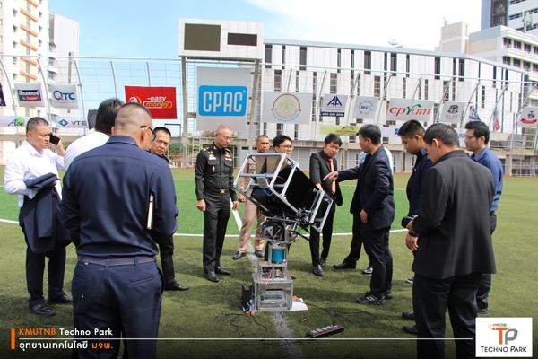
สนามหญ้าและรั้วอาคาร94ในข่าวเยี่ยมชมเทคโนโลยีเรดาร์ · กิจกรรม21พ.ย.2567 · เผยแพร่25พ.ย.2567 · อุทยานเทคโนโลยี มจพ. อาคารปฏิบัติการวิทยาศาสตร์การกีฬา หรืออาคาร94 มีสนามฟุตบอลและลู่วิ่งยกระดับ กลุ่มงานกิจกรรมนักศึกษาระบุชั้น1เป็นKMUTNB Fitness Center และชั้น2เป็นสนามฟุตบอล/ลู่วิ่ง ข่าวTechno Parkระบุการสาธิตเทคโนโลยีเรดาร์ที่สนาม94เมื่อ21พฤศจิกายน2567 ภาพแสดงพื้นสนามหญ้าและโครงรั้วจริง เงื่อนไขการใช้บริการปัจจุบันให้ตรวจหน่วยงานกิจกรรมนักศึกษา
เพิ่มเฉพาะโครงรั้วโค้งและตาข่ายบนขอบสนามตามผังเดิม ความสูง จำนวนช่วงและระยะตาข่ายยังประมาณ ภาพผู้ออกแบบเป็นสภาพก่อนปูหญ้า จึงไม่ใช้เปลี่ยนสนามหญ้าที่ภาพข่าวปี2567ยืนยัน คงพื้นสนาม ลู่วิ่ง อัฒจันทร์ หลังคาและค้ำยันเดิม มุมเปรียบเทียบแสดงรั้วใหม่กับพื้นเดิม ไม่ใช่การยืนยันอาคารทั้งหลังครบทุกด้าน
ตรวจพบข้อมูลทางการบางส่วน
อาคารปฏิบัติการวิทยาศาสตร์การกีฬาและพื้นที่ออกกำลังกาย สนามฟุตบอล ลู่วิ่ง และที่จอดรถใต้สนามตามข้อมูลแผนที่ที่ได้รับ รายชั้น 0 แถวมีข้อมูล · 1 แถวเว้นไว้ ชั้น หน่วยงาน / พื้นที่ / เลขห้อง 1
แถวชั้นตั้งต้นจากโมเดลเดิม เพิ่มชั้นที่พบในเอกสาร; ช่องว่างหมายถึงยังไม่มีข้อมูล ไม่ได้แปลว่าเป็นพื้นที่ว่าง และไม่ยืนยันจำนวนชั้นจริง
แหล่งอ้างอิงและข้อสังเกต (1) แหล่งทางการยืนยันบริการกีฬา แต่ชั้นและเวลาเปิดของแต่ละสนามยังต้องตรวจประกาศ อาคาร 95: กรอบทางเข้าโค้งสีเข้ม ป้ายวิทยาลัยนานาชาติและผิวแผงขาว · ข่าวเยี่ยมชมวันที่ 6 ธ.ค. 2565; ไม่ยืนยันวันถ่ายแยกของรูปอาคาร · TGGS มจพ. วิทยาลัยนานาชาติ มจพ. ใช้อาคาร 95 เว็บไซต์วิทยาลัยมีข้อมูลหลักสูตรด้านการค้าระหว่างประเทศและธุรกิจโลจิสติกส์ รวมถึงการจัดการธุรกิจและบริการการบินในยุคดิจิทัล พร้อมข้อมูลการรับสมัครและความร่วมมือหลักสูตรสองปริญญา ให้ตรวจรายละเอียดหลักสูตรปัจจุบันจากวิทยาลัยโดยตรง
ภาพมองเงยและตัดยอดอาคาร ปรับกรอบทางเข้ากับรูปด้านที่เห็น คงผังและ 4 ชั้นเดิม รัศมีโค้ง ความลึกและความสูงแผงรวมยังประมาณ ส่วนหลังคาด้านบนและรูปด้านที่ไม่เห็นยังไม่มีภาพยืนยัน
ตรวจพบข้อมูลทางการบางส่วน
วิทยาลัยนานาชาติ หลักสูตรการค้าระหว่างประเทศและธุรกิจโลจิสติกส์ (นานาชาติ) ประกาศรับสมัครปี 2569 ระบุอาคาร 95 อยู่ตรงข้ามสนามกีฬา รายชั้น 1 แถวมีข้อมูล · 3 แถวเว้นไว้ ชั้น หน่วยงาน / พื้นที่ / เลขห้อง 1 2 3 4 ห้อง 401 ใช้ปฐมนิเทศนักศึกษาใหม่ ↗ ห้องที่พบจากกิจกรรม · 2026-07-06
ห้อง 401
แถวชั้นตั้งต้นจากโมเดลเดิม เพิ่มชั้นที่พบในเอกสาร; ช่องว่างหมายถึงยังไม่มีข้อมูล ไม่ได้แปลว่าเป็นพื้นที่ว่าง และไม่ยืนยันจำนวนชั้นจริง
แหล่งอ้างอิงและข้อสังเกต (2) ยืนยันบริการ / ตำแหน่งจุดร้านยังประมาณ
เว็บไซต์หอพัก มจพ. ระบุ 7-Eleven เป็นสิ่งอำนวยความสะดวกของหอพัก หน้าเว็บหอพักระบุเวลา 07:00–19:00 น.; ต้องตรวจหน้าร้านอีกครั้ง รายชั้น 0 แถวมีข้อมูล · 1 แถวเว้นไว้ ชั้น หน่วยงาน / พื้นที่ / เลขห้อง 1
แถวชั้นตั้งต้นจากโมเดลเดิม เพิ่มชั้นที่พบในเอกสาร; ช่องว่างหมายถึงยังไม่มีข้อมูล ไม่ได้แปลว่าเป็นพื้นที่ว่าง และไม่ยืนยันจำนวนชั้นจริง
แหล่งอ้างอิงและข้อสังเกต (1) ยืนยันว่ามีบริการในโซนหอพัก ไม่ได้ยืนยันขอบเขตร้าน standalone ที่วาดในโมเดล คู่มือนักศึกษาต่างชาติอีกฉบับระบุปิด 21:00 น. จึงไม่รับรองเวลาปัจจุบัน 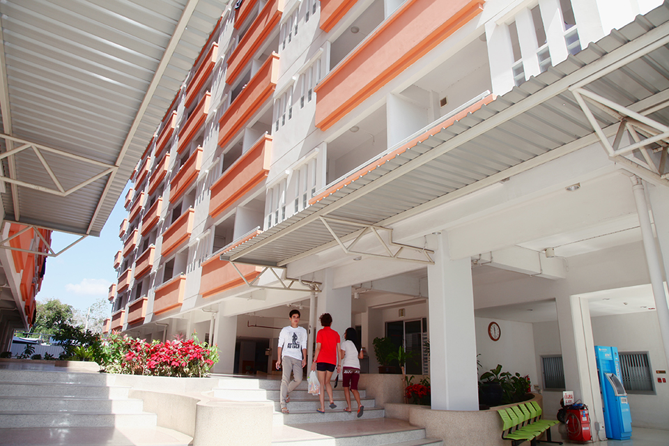
กลุ่มหอพักกรุงเทพฯ: ระเบียงส้ม เสาขาว กันสาดโครงสามเหลี่ยมและบันได · ส่วนท้ายภาพ ม.ค.2555; หัวข้ออัปโหลด เม.ย.2561 · หอพักนักศึกษา มจพ. กรุงเทพฯ / Google Maps ป้ายศูนย์ที่พักเพื่อการเรียนรู้และสันทนาการ ไม่ได้ยืนยันว่าเป็นทางเข้าตึกชายหรือหญิง · ส่วนท้ายภาพ มี.ค.2559; หัวข้ออัปโหลด เม.ย.2561 · หอพักนักศึกษา มจพ. กรุงเทพฯ / Google Maps ภาพภายใน: ห้องพักและเตียงสองชั้นจากเว็บหอพัก ไม่ใช้ยืนยันรูปด้านนอก · ไม่ระบุวันถ่ายหรือวันเผยแพร่ · ศูนย์ที่พักเพื่อการเรียนรู้และสันทนาการ มจพ. กรุงเทพฯ ศูนย์ที่พักเพื่อการเรียนรู้และสันทนาการ หรือหอพักนักศึกษา มจพ. กรุงเทพฯ ให้บริการที่พักและพื้นที่ส่วนกลาง เว็บไซต์ทางการระบุรองรับผู้พักรวม 960 คน และแสดงบริการซ่อมบำรุง ร้านสะดวกซื้อ ห้องพยาบาล ซักผ้า ลิฟต์ กล้องวงจรปิดและรักษาความปลอดภัย รายละเอียดการสมัครและการให้บริการปัจจุบันให้ตรวจเว็บหอพัก ภาพที่เพิ่มเป็นภาพระดับกลุ่มอาคาร ยังไม่ระบุเลขตึกชาย/หญิงโดยตรง
ใช้ภาพกลุ่มหอพักปรับองค์ประกอบร่วมของเลขแมพ92/93 ไม่อ้างว่าภาพระเบียง ป้ายศูนย์และห้องพักเป็นตึกชายหรือหญิงโดยเฉพาะ ภาพเก่าระบุเวลาถ่ายกับอัปโหลดต่างกัน คงผังและ13ชั้นเดิม ไม่ใช้ภาพนี้ยืนยันจำนวนชั้นทั้งหมด หลังคาที่ไม่เห็น รูปด้านอื่น มิติและตำแหน่งกันสาดยังประมาณ ป้ายศูนย์เพิ่มเป็นรูปประกอบ ไม่ใส่ซ้ำบนทุกตึกโดยไม่มีหลักฐานตำแหน่ง
ตรวจพบข้อมูลทางการบางส่วน
หอพักนักศึกษาชาย / ศูนย์ที่พักเพื่อการเรียนรู้และสันทนาการ อาคารหอพักสูง 13 ชั้น ชั้น 1 พื้นที่ส่วนกลาง; ชั้น 2–12 ห้องพักพัดลม; ชั้น 13 ห้องพักปรับอากาศสำหรับนักศึกษาต่างชาติ ติดต่อศูนย์ที่พักฯ: 02-555-2000 ต่อ 2178 หรือ 1814 เว็บไซต์หอพักระบุบริการซักผ้า ระบบรักษาความปลอดภัย และลิฟต์โดยสาร รายชั้น 13 แถวมีข้อมูล · 0 แถวเว้นไว้ ชั้น หน่วยงาน / พื้นที่ / เลขห้อง 1 สำนักงาน / พื้นที่ส่วนกลางของหอพัก ↗ หน่วยงาน/บริการ
2 ห้องพักนักศึกษาแบบพัดลม ↗ ข้อมูลหอพัก ไม่ใช่ผังห้องรายบุคคล
3 ห้องพักนักศึกษาแบบพัดลม ↗ ข้อมูลหอพัก ไม่ใช่ผังห้องรายบุคคล
4 ห้องพักนักศึกษาแบบพัดลม ↗ ข้อมูลหอพัก ไม่ใช่ผังห้องรายบุคคล
5 ห้องพักนักศึกษาแบบพัดลม ↗ ข้อมูลหอพัก ไม่ใช่ผังห้องรายบุคคล
6 ห้องพักนักศึกษาแบบพัดลม ↗ ข้อมูลหอพัก ไม่ใช่ผังห้องรายบุคคล
7 ห้องพักนักศึกษาแบบพัดลม ↗ ข้อมูลหอพัก ไม่ใช่ผังห้องรายบุคคล
8 ห้องพักนักศึกษาแบบพัดลม ↗ ข้อมูลหอพัก ไม่ใช่ผังห้องรายบุคคล
9 ห้องพักนักศึกษาแบบพัดลม ↗ ข้อมูลหอพัก ไม่ใช่ผังห้องรายบุคคล
10 ห้องพักนักศึกษาแบบพัดลม ↗ ข้อมูลหอพัก ไม่ใช่ผังห้องรายบุคคล
11 ห้องพักนักศึกษาแบบพัดลม ↗ ข้อมูลหอพัก ไม่ใช่ผังห้องรายบุคคล
12 ห้องพักนักศึกษาแบบพัดลม ↗ ข้อมูลหอพัก ไม่ใช่ผังห้องรายบุคคล
13 ห้องพักปรับอากาศสำหรับนักศึกษาต่างชาติ ↗ ข้อมูลหอพัก ไม่ใช่ผังห้องรายบุคคล
แถวชั้นตั้งต้นจากโมเดลเดิม เพิ่มชั้นที่พบในเอกสาร; ช่องว่างหมายถึงยังไม่มีข้อมูล ไม่ได้แปลว่าเป็นพื้นที่ว่าง และไม่ยืนยันจำนวนชั้นจริง
แหล่งอ้างอิงและข้อสังเกต (2) การเข้าพักต้องเป็นไปตามระเบียบและประกาศของหอพัก; หน้าแหล่งข้อมูลไม่ระบุวันปรับปรุง กลุ่มหอพักกรุงเทพฯ: ระเบียงส้ม เสาขาว กันสาดโครงสามเหลี่ยมและบันได · ส่วนท้ายภาพ ม.ค.2555; หัวข้ออัปโหลด เม.ย.2561 · หอพักนักศึกษา มจพ. กรุงเทพฯ / Google Maps ป้ายศูนย์ที่พักเพื่อการเรียนรู้และสันทนาการ ไม่ได้ยืนยันว่าเป็นทางเข้าตึกชายหรือหญิง · ส่วนท้ายภาพ มี.ค.2559; หัวข้ออัปโหลด เม.ย.2561 · หอพักนักศึกษา มจพ. กรุงเทพฯ / Google Maps ภาพภายใน: ห้องพักและเตียงสองชั้นจากเว็บหอพัก ไม่ใช้ยืนยันรูปด้านนอก · ไม่ระบุวันถ่ายหรือวันเผยแพร่ · ศูนย์ที่พักเพื่อการเรียนรู้และสันทนาการ มจพ. กรุงเทพฯ ศูนย์ที่พักเพื่อการเรียนรู้และสันทนาการ หรือหอพักนักศึกษา มจพ. กรุงเทพฯ ให้บริการที่พักและพื้นที่ส่วนกลาง เว็บไซต์ทางการระบุรองรับผู้พักรวม 960 คน และแสดงบริการซ่อมบำรุง ร้านสะดวกซื้อ ห้องพยาบาล ซักผ้า ลิฟต์ กล้องวงจรปิดและรักษาความปลอดภัย รายละเอียดการสมัครและการให้บริการปัจจุบันให้ตรวจเว็บหอพัก ภาพที่เพิ่มเป็นภาพระดับกลุ่มอาคาร ยังไม่ระบุเลขตึกชาย/หญิงโดยตรง
ใช้ภาพกลุ่มหอพักปรับองค์ประกอบร่วมของเลขแมพ92/93 ไม่อ้างว่าภาพระเบียง ป้ายศูนย์และห้องพักเป็นตึกชายหรือหญิงโดยเฉพาะ ภาพเก่าระบุเวลาถ่ายกับอัปโหลดต่างกัน คงผังและ13ชั้นเดิม ไม่ใช้ภาพนี้ยืนยันจำนวนชั้นทั้งหมด หลังคาที่ไม่เห็น รูปด้านอื่น มิติและตำแหน่งกันสาดยังประมาณ ป้ายศูนย์เพิ่มเป็นรูปประกอบ ไม่ใส่ซ้ำบนทุกตึกโดยไม่มีหลักฐานตำแหน่ง
ตรวจพบข้อมูลทางการบางส่วน
หอพักนักศึกษาหญิง / ศูนย์ที่พักเพื่อการเรียนรู้และสันทนาการ อาคารหอพักสูง 13 ชั้น ชั้น 1 พื้นที่ส่วนกลาง; ชั้น 2–12 ห้องพักพัดลม; ชั้น 13 ห้องพักปรับอากาศสำหรับนักศึกษาต่างชาติ ติดต่อศูนย์ที่พักฯ: 02-555-2000 ต่อ 2178 หรือ 1814 เว็บไซต์หอพักระบุบริการซักผ้า ระบบรักษาความปลอดภัย และลิฟต์โดยสาร รายชั้น 13 แถวมีข้อมูล · 0 แถวเว้นไว้ ชั้น หน่วยงาน / พื้นที่ / เลขห้อง 1 สำนักงาน / พื้นที่ส่วนกลางของหอพัก ↗ หน่วยงาน/บริการ
2 ห้องพักนักศึกษาแบบพัดลม ↗ ข้อมูลหอพัก ไม่ใช่ผังห้องรายบุคคล
3 ห้องพักนักศึกษาแบบพัดลม ↗ ข้อมูลหอพัก ไม่ใช่ผังห้องรายบุคคล
4 ห้องพักนักศึกษาแบบพัดลม ↗ ข้อมูลหอพัก ไม่ใช่ผังห้องรายบุคคล
5 ห้องพักนักศึกษาแบบพัดลม ↗ ข้อมูลหอพัก ไม่ใช่ผังห้องรายบุคคล
6 ห้องพักนักศึกษาแบบพัดลม ↗ ข้อมูลหอพัก ไม่ใช่ผังห้องรายบุคคล
7 ห้องพักนักศึกษาแบบพัดลม ↗ ข้อมูลหอพัก ไม่ใช่ผังห้องรายบุคคล
8 ห้องพักนักศึกษาแบบพัดลม ↗ ข้อมูลหอพัก ไม่ใช่ผังห้องรายบุคคล
9 ห้องพักนักศึกษาแบบพัดลม ↗ ข้อมูลหอพัก ไม่ใช่ผังห้องรายบุคคล
10 ห้องพักนักศึกษาแบบพัดลม ↗ ข้อมูลหอพัก ไม่ใช่ผังห้องรายบุคคล
11 ห้องพักนักศึกษาแบบพัดลม ↗ ข้อมูลหอพัก ไม่ใช่ผังห้องรายบุคคล
12 ห้องพักนักศึกษาแบบพัดลม ↗ ข้อมูลหอพัก ไม่ใช่ผังห้องรายบุคคล
13 ห้องพักปรับอากาศสำหรับนักศึกษาต่างชาติ ↗ ข้อมูลหอพัก ไม่ใช่ผังห้องรายบุคคล
แถวชั้นตั้งต้นจากโมเดลเดิม เพิ่มชั้นที่พบในเอกสาร; ช่องว่างหมายถึงยังไม่มีข้อมูล ไม่ได้แปลว่าเป็นพื้นที่ว่าง และไม่ยืนยันจำนวนชั้นจริง
แหล่งอ้างอิงและข้อสังเกต (2) การเข้าพักต้องเป็นไปตามระเบียบและประกาศของหอพัก; หน้าแหล่งข้อมูลไม่ระบุวันปรับปรุง ยังไม่ทราบชื่ออาคาร
รายชั้น 0 แถวมีข้อมูล · 3 แถวเว้นไว้ ชั้น หน่วยงาน / พื้นที่ / เลขห้อง 1 2 3
แถวชั้นตั้งต้นจากโมเดลเดิม เพิ่มชั้นที่พบในเอกสาร; ช่องว่างหมายถึงยังไม่มีข้อมูล ไม่ได้แปลว่าเป็นพื้นที่ว่าง และไม่ยืนยันจำนวนชั้นจริง
แหล่งอ้างอิงและข้อสังเกต (0) อยู่โซนหอพักตามตำแหน่งไฟล์เดิม; ยังไม่กำหนดว่าเป็นอาคาร 99 เพราะอาคาร 99 มีรายการแยกอยู่แล้ว ต้องตรวจป้ายอาคารหรือภาพหน้างานที่พิกัดนี้เพื่อระบุชื่อ; ไม่ใช้ชื่อหอพักหรือ Techno Park จากหมุดข้างเคียงแทน 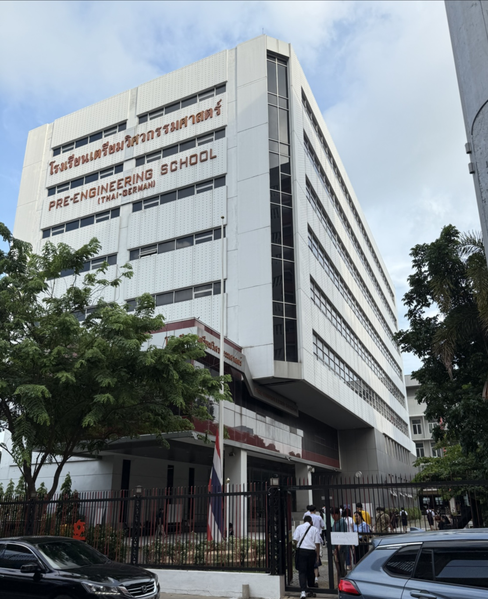
อาคาร 90: แผงขาว ช่องกระจกยาวและชื่อโรงเรียน · ก.ย. 2569 ตามหัวข้อภาพ · pako Jan / Google Maps อาคาร 90 เป็นที่ตั้งโรงเรียนเตรียมวิศวกรรมศาสตร์ ไทย-เยอรมัน สังกัดวิทยาลัยเทคโนโลยีอุตสาหกรรม มจพ. หลักสูตรระดับประกาศนียบัตรวิชาชีพมีสายเครื่องกล ไฟฟ้าและอิเล็กทรอนิกส์ และโยธา ควรตรวจสอบหลักสูตรและการรับสมัครจากวิทยาลัยโดยตรง
คงผังและจำนวนชั้นที่แสดงเดิม ปรับรูปด้านหลักและช่องกระจกจากภาพมุมเดียว จำนวนช่อง มิติ หลังคาด้านบนและรูปด้านที่ภาพไม่เห็นยังประมาณ
ตรวจพบข้อมูลทางการบางส่วน
โรงเรียนเตรียมวิศวกรรมศาสตร์ ไทย-เยอรมัน ในสังกัดวิทยาลัยเทคโนโลยีอุตสาหกรรม รายชั้น 1 แถวมีข้อมูล · 5 แถวเว้นไว้ ชั้น หน่วยงาน / พื้นที่ / เลขห้อง 1 2 สำนักงานโรงเรียนเตรียมวิศวกรรมศาสตร์ ไทย-เยอรมัน ↗ หน่วยงาน/บริการ
3 4 5 6
แถวชั้นตั้งต้นจากโมเดลเดิม เพิ่มชั้นที่พบในเอกสาร; ช่องว่างหมายถึงยังไม่มีข้อมูล ไม่ได้แปลว่าเป็นพื้นที่ว่าง และไม่ยืนยันจำนวนชั้นจริง
แหล่งอ้างอิงและข้อสังเกต (2) การใช้ห้องเรียนและห้องปฏิบัติการรายชั้นยังต้องตรวจตารางของโรงเรียน 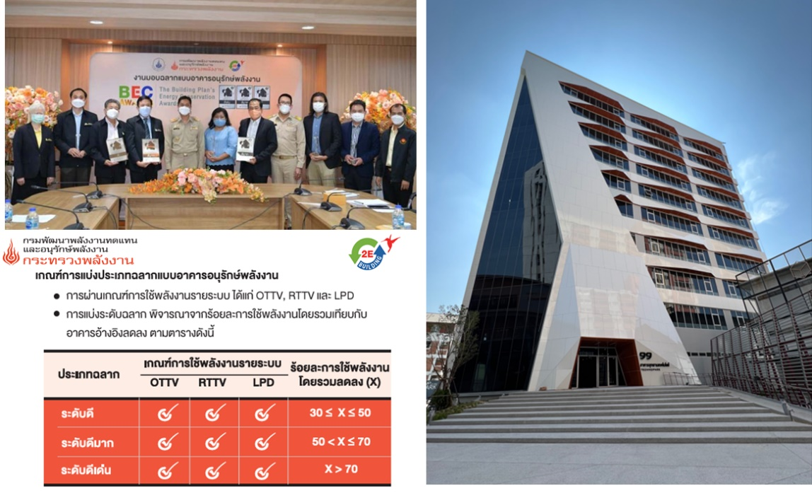
ภาพประกอบบทความทางการ: ด้านขวาเป็นภาพภายนอกอาคาร99ถึงขอบยอด เห็นกระจกสามเหลี่ยมด้านข้าง ผนังขาวเฉียง แถวหน้าต่างและบันได ภาพซ้ายเป็นงานมอบรางวัลและเกณฑ์ฉลากอาคาร · บทความกล่าวถึงรางวัล4ต.ค.2564 · ไม่ระบุวันถ่ายภาพอาคาร · อุทยานเทคโนโลยี มจพ. · บทความ Sustainable ภาพและแผนผังในบทความทางการอธิบายการปรับพื้นถนนรอบอาคาร99บางส่วนเป็นบล็อกหญ้าซึมน้ำ พร้อมภาพช่องจอด EV CHARGE ไม่ใช่แบบสำรวจตำแหน่งที่ติดตั้งปัจจุบัน · หน้าแหล่งภาพไม่ระบุวันถ่าย · ชื่อโฟลเดอร์ไม่ใช้แทนวันถ่าย · อุทยานเทคโนโลยี มจพ. · บทความ Sustainable อุทยานเทคโนโลยี มจพ. ให้บริการวิชาการ งานวิจัยและนวัตกรรม ทรัพย์สินทางปัญญาและ CWIE ผู้ก่อสร้างระบุอาคาร10ชั้นพร้อมที่จอดรถใต้ดิน1ชั้น บทความทางการระบุอาคาร99ได้รับรางวัลฉลากแบบอาคารเพื่อการอนุรักษ์พลังงานระดับดีมากในงาน4ตุลาคม2564 และอธิบายการเปลี่ยนพื้นแข็งรอบตึกประมาณ34%เป็นบล็อกหญ้า พื้นที่ชั้น1มีศูนย์ปฏิบัติการเทคโนโลยีอากาศยานและการป้องกันประเทศ รวมทั้งศูนย์การเรียนรู้นวัตกรรมและเทคโนโลยีดิจิทัลตามข่าวเปิดศูนย์ ส่วนศูนย์เทคโนโลยีเรดาร์ระบุที่ตั้งชั้น8 ข้อมูลเหล่านี้ไม่ใช่ผังห้องทั้งชั้น
คงกรอบผังและ10ชั้นเดิม แยกด้านกระจกสามเหลี่ยมกับด้านหน้าต่างเป็นคนละระนาบตามภาพ เพิ่มแผงเฉียง รอยต่อผนัง กรอบทางเข้า ป้าย บันไดและพื้นบล็อกหญ้าบางช่วง ขนาด จำนวนช่อง ความสูง แนววางด้านอาคารและตำแหน่งแถบพื้นยังประมาณ ภาพใหม่เห็นขอบยอดแต่ไม่เห็นผิวหลังคาด้านใน จึงไม่ยืนยันอุปกรณ์บนหลังคาหรือด้านหลัง ภาพประกอบเดิมเก็บไว้ทั้งภาพ ไม่ดัดแปลงส่วนรางวัลหรือข้อความให้เป็นหลักฐานสภาพปัจจุบัน
Techno Park 99: ผนังเฉียง กระจกสูง ช่องหน้าต่างแนวนอนและบันไดหน้า · หน้าโครงการระบุเริ่ม 2565 กำหนดเสร็จ 2566; ไม่ระบุวันถ่ายภาพ · KPY Development — ผลงานอาคารอุทยานเทคโนโลยี มจพ. 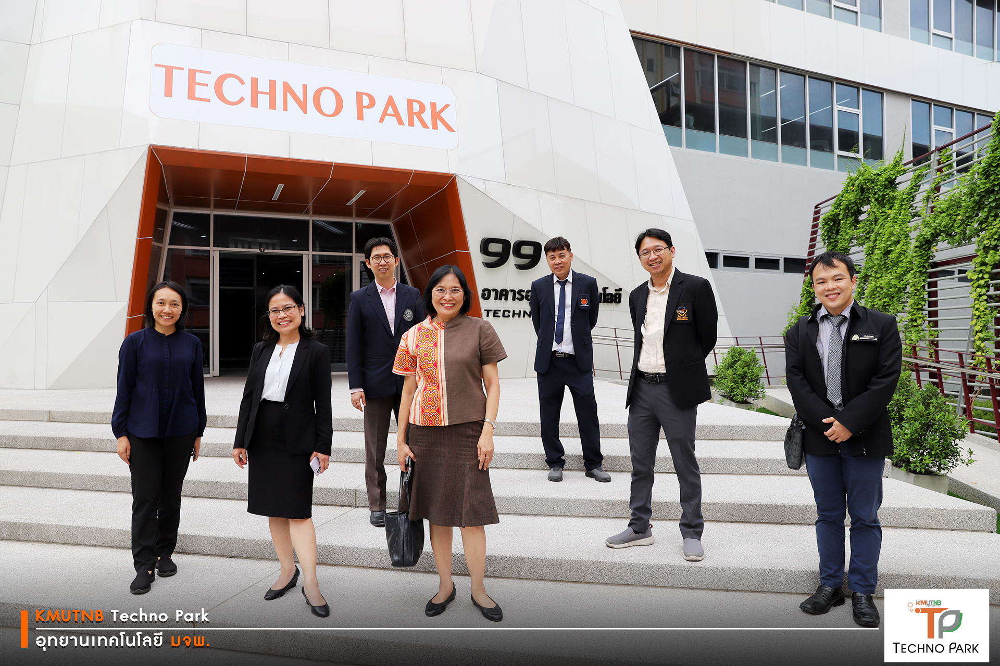
Techno Park: ทางเข้าเว้าลึกใต้กันสาดสีส้ม · ภาพประกอบข่าวในเว็บไซต์ทางการ; ชื่อไฟล์ลงวันที่ 8 มิ.ย. 2567 ไม่ใช้แทนวันถ่ายที่ยืนยัน · อุทยานเทคโนโลยี มจพ. อุทยานเทคโนโลยี มจพ. (KMUTNB Techno Park) มีงานบริการวิชาการ ฝึกอบรม งานทรัพย์สินทางปัญญา และการประสานสหกิจศึกษา/การศึกษาเชิงบูรณาการกับการทำงาน (CWIE) หน้าโครงการของผู้ก่อสร้างระบุอาคาร 10 ชั้นพร้อมที่จอดรถใต้ดิน 1 ชั้น ใช้ประกอบรูปด้าน ไม่ถือเป็นผังหน่วยงานแยกชั้น
คงผังและ 10 ชั้นเดิม ปรับรูปด้านหลักกับทางเข้าจากภาพภายนอกสองมุม เส้นเฉียง ความกว้างกระจกและมิติชิ้นส่วนยังประมาณ ภาพแรกตัดยอดบางส่วน หลังคาและรูปด้านที่ไม่เห็นจึงไม่ยืนยันครบ
ตรวจพบข้อมูลทางการบางส่วน
อุทยานเทคโนโลยี มจพ. (KMUTNB Techno Park) ชั้น 4 ห้องประชุมปฐพี ชั้น 5 งานบริการวิชาการ มีบริการด้านทรัพย์สินทางปัญญา รายชั้น 4 แถวมีข้อมูล · 6 แถวเว้นไว้ ชั้น หน่วยงาน / พื้นที่ / เลขห้อง 1 ศูนย์ปฏิบัติการเทคโนโลยีอากาศยานและการป้องกันประเทศ ↗ ตรวจ21ต.ค.2569
ศูนย์การเรียนรู้นวัตกรรมและเทคโนโลยีดิจิทัล ↗ ข่าวครบรอบ65ปี
2 3 4 ห้องประชุมปฐพี ↗ ห้องประชุม
5 งานบริการวิชาการ ↗ หน่วยงาน/บริการ
6 7 8 ศูนย์เทคโนโลยีเรดาร์ ↗ ตรวจ21ต.ค.2569
9 10
แถวชั้นตั้งต้นจากโมเดลเดิม เพิ่มชั้นที่พบในเอกสาร; ช่องว่างหมายถึงยังไม่มีข้อมูล ไม่ได้แปลว่าเป็นพื้นที่ว่าง และไม่ยืนยันจำนวนชั้นจริง
แหล่งอ้างอิงและข้อสังเกต (3) ตรวจพบข้อมูลทางการบางส่วน
อาคารเรียนและโรงอาหาร ตามเอกสารจัดซื้อจัดจ้าง รายชั้น 0 แถวมีข้อมูล · 4 แถวเว้นไว้ ชั้น หน่วยงาน / พื้นที่ / เลขห้อง 1 2 3 4
แถวชั้นตั้งต้นจากโมเดลเดิม เพิ่มชั้นที่พบในเอกสาร; ช่องว่างหมายถึงยังไม่มีข้อมูล ไม่ได้แปลว่าเป็นพื้นที่ว่าง และไม่ยืนยันจำนวนชั้นจริง
แหล่งอ้างอิงและข้อสังเกต (1) ไม่ได้ยืนยันร้านค้า เวลาเปิด หรือการใช้พื้นที่รายชั้นทั้งหมด ภาพที่เห็นเลข96และชื่อคณะ แสดงแผงขาว ช่องกระจกแนวตั้ง กรอบกระจกม่วงเข้ามุม และแนวแผงยื่นชั้นบน · ไม่ระบุวันถ่ายหรือวันเผยแพร่ · ไม่ใช้วันที่อัปเดตหน้ารีวิวแทนวันถ่าย · ภาพเผยแพร่ผ่าน Wheree · ไม่พบชื่อผู้ถ่ายในแหล่งที่เข้าถึงได้ เพิ่มรูปด้านส่วนบนและกระจกเข้ามุมจากภาพที่เห็นเลข96ชัดเจน คงผังเดิมและ7ชั้นที่แสดงในแมพ รวมโถง ป้าย บันไดและซุ้มระแนงเดิมจากภาพ2ก.ค.2563 จำนวนช่อง แผงยื่น ระยะลึก ความสูงและด้านที่ไม่เห็นยังประมาณ ภาพใหม่ไม่ระบุวันถ่าย จึงไม่ใช้เรียงเวลากับภาพเดิมหรือรับรองสภาพล่าสุด หลังคาดาดฟ้าส่วนที่ไม่ปรากฏยังไม่ยืนยัน ไม่ใช้ภาพนี้ยืนยันผังห้องแต่ละชั้น
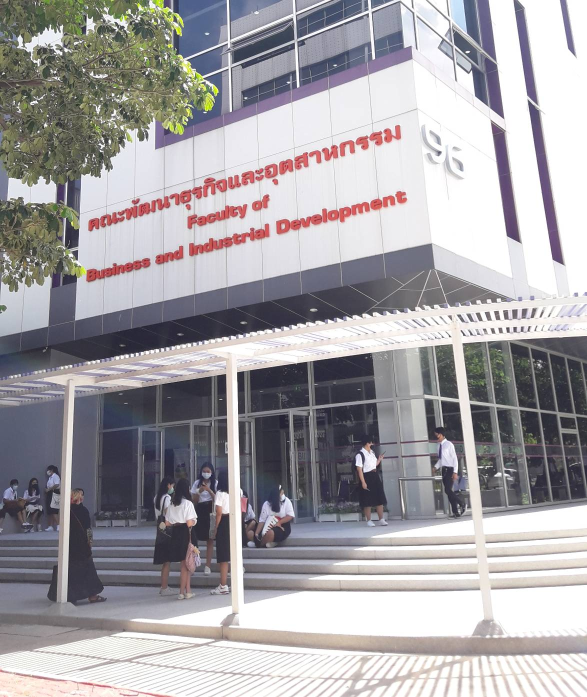
อาคาร 96: ป้ายคณะ กรอบกระจกและซุ้มระแนงสีขาว · 2 ก.ค. 2563 ตามข้อมูลไฟล์ · Poonpun2016 / Wikimedia Commons · CC BY-SA 4.0 คณะพัฒนาธุรกิจและอุตสาหกรรม มจพ. ใช้อาคาร 96 จัดการศึกษาด้านบริหารธุรกิจและการพัฒนาอุตสาหกรรม เว็บไซต์คณะระบุหมายเลขติดต่อ 0-2555-2000 ต่อ 3808 และ info@bid.kmutnb.ac.th รายละเอียดหลักสูตรและงานติดต่อให้ตรวจสอบจากคณะโดยตรง
เพิ่มรูปด้านส่วนบนและกระจกเข้ามุมจากภาพที่เห็นเลข96ชัดเจน คงผังเดิมและ7ชั้นที่แสดงในแมพ รวมโถง ป้าย บันไดและซุ้มระแนงเดิมจากภาพ2ก.ค.2563 จำนวนช่อง แผงยื่น ระยะลึก ความสูงและด้านที่ไม่เห็นยังประมาณ ภาพใหม่ไม่ระบุวันถ่าย จึงไม่ใช้เรียงเวลากับภาพเดิมหรือรับรองสภาพล่าสุด หลังคาดาดฟ้าส่วนที่ไม่ปรากฏยังไม่ยืนยัน ไม่ใช้ภาพนี้ยืนยันผังห้องแต่ละชั้น
ตรวจพบข้อมูลทางการบางส่วน
คณะพัฒนาธุรกิจและอุตสาหกรรม ฝ่ายวิชาการ ชั้น 2; มีเอกสารติดต่อหลักสูตรบัณฑิตศึกษาที่ชั้น 4 รายชั้น 4 แถวมีข้อมูล · 3 แถวเว้นไว้ ชั้น หน่วยงาน / พื้นที่ / เลขห้อง 1 2 ฝ่ายวิชาการ ↗ หน่วยงาน/บริการ · 2569
3 ห้องประชุม 310 ใช้จัดสัมมนา Green Industry ↗ ห้องที่พบจากกิจกรรม · 2026-08-06
ห้อง 310
4 ติดต่อหลักสูตรบัณฑิตศึกษา ↗ ข้อมูลติดต่อตามเอกสารเดิม
ห้องประชุม 96-414 ↗ ห้องประชุมตามเอกสารเดิม · 2565
ห้อง 96-414
5 6 7 ห้อง 716 ใช้ประกวดผลงาน CWIE ↗ ห้องที่พบจากกิจกรรม · 2026-02-17
ห้อง 716
แถวชั้นตั้งต้นจากโมเดลเดิม เพิ่มชั้นที่พบในเอกสาร; ช่องว่างหมายถึงยังไม่มีข้อมูล ไม่ได้แปลว่าเป็นพื้นที่ว่าง และไม่ยืนยันจำนวนชั้นจริง
แหล่งอ้างอิงและข้อสังเกต (6) ข้อมูลข่าวเก่าใช้ยืนยันการใช้พื้นที่บางส่วน; ตรวจหน่วยงานก่อนติดต่อ ยืนยันชื่อและประเภทอาคาร
อาคารโรงอาหารและสันทนาการ ตามประกาศจัดจ้างของมหาวิทยาลัย เป็นพื้นที่บริการโรงอาหารและนันทนาการในโซนคณะพัฒนาธุรกิจและอุตสาหกรรม รายชั้น 0 แถวมีข้อมูล · 3 แถวเว้นไว้ ชั้น หน่วยงาน / พื้นที่ / เลขห้อง 1 2 3
แถวชั้นตั้งต้นจากโมเดลเดิม เพิ่มชั้นที่พบในเอกสาร; ช่องว่างหมายถึงยังไม่มีข้อมูล ไม่ได้แปลว่าเป็นพื้นที่ว่าง และไม่ยืนยันจำนวนชั้นจริง
แหล่งอ้างอิงและข้อสังเกต (2) ผังแยกรายชั้นและเวลาเปิดปัจจุบันยังไม่พบแหล่งยืนยัน ข้อมูลเดิมระบุสนามแบดมินตันชั้น 2; มีบันทึกสำรวจนักศึกษาปี 2562 กล่าวถึงแบดมินตันและปิงปอง แต่ยังใช้ยืนยันสภาพปัจจุบันไม่ได้ 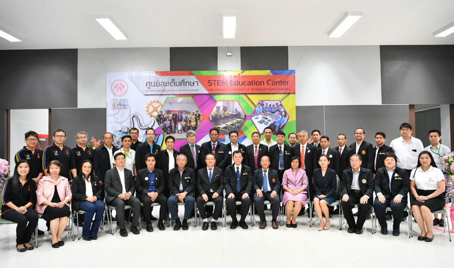
ภาพภายในพิธีเปิดศูนย์สะเต็มศึกษา ชั้น5 อาคาร97 จากสารประดู่แดงฉบับ134 หน้า5 · พิธีเปิด16มี.ค.2562 · ตามคำบรรยายข่าว · มหาวิทยาลัยเทคโนโลยีพระจอมเกล้าพระนครเหนือ · สารประดู่แดงฉบับ134 อาคารปฏิบัติการฝึกฝีมือพื้นฐาน97 มีข้อมูลการใช้พื้นที่จากเอกสารมหาวิทยาลัย: สารประดู่แดงฉบับ134ระบุพิธีเปิดศูนย์สะเต็มศึกษาที่ชั้น5 เมื่อ16มีนาคม2562 และเอกสารรายวิชาเขียนแบบโยธา1 ภาคเรียน1/2564ระบุสถานที่เรียนห้อง97-405 ชั้น4 ข้อมูลนี้ยืนยันการใช้พื้นที่ตามช่วงเวลาของเอกสาร ยังไม่ยืนยันตารางเรียนหรือการให้บริการปัจจุบัน
เพิ่มภาพภายในและข้อมูลชั้น4–5เท่านั้น คงรูปทรงภายนอกเดิม ไม่ใช้ป้ายหรือผนังห้องในภาพเป็นหลักฐานหน้าต่าง หลังคา หรือรูปทรงภายนอกอาคาร ข้อมูลกิจกรรมและรายวิชาไม่ยืนยันห้องใช้งานปัจจุบัน
ตรวจพบข้อมูลทางการบางส่วน
อาคารปฏิบัติการฝึกฝีมือพื้นฐาน เอกสาร TOR ระบุอาคารคอนกรีตเสริมเหล็ก 5 ชั้น รายชั้น 2 แถวมีข้อมูล · 3 แถวเว้นไว้ ชั้น หน่วยงาน / พื้นที่ / เลขห้อง 1 2 3 4 ห้อง97-405 · สถานที่เรียนเขียนแบบโยธา1 ตามเอกสารภาคเรียน1/2564 ↗ 2564
5 ศูนย์สะเต็มศึกษา · พิธีเปิด16มี.ค.2562 ↗ 2562
แถวชั้นตั้งต้นจากโมเดลเดิม เพิ่มชั้นที่พบในเอกสาร; ช่องว่างหมายถึงยังไม่มีข้อมูล ไม่ได้แปลว่าเป็นพื้นที่ว่าง และไม่ยืนยันจำนวนชั้นจริง
แหล่งอ้างอิงและข้อสังเกต (3) ตำแหน่งและขอบเขตในโมเดลยังประมาณ สารประดู่แดง134 หน้า5 · เอกสารรายวิชา97-405
ไม่พบอาคารตามคำค้น ลองค้นด้วยชื่อหน่วยงานหรือเลขอาคาร